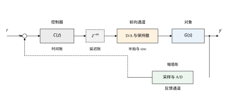
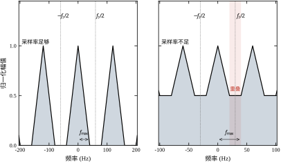
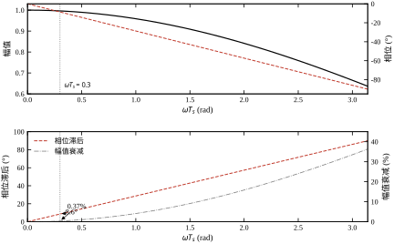
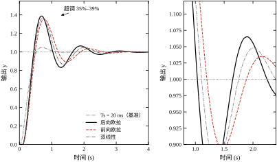
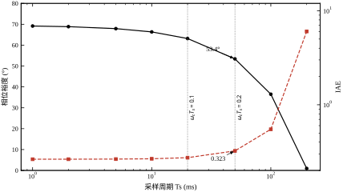
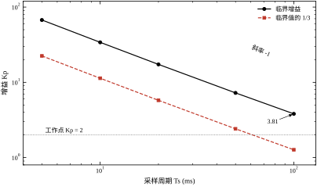
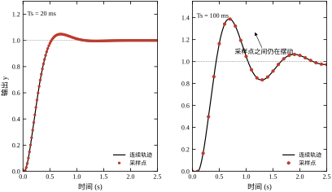
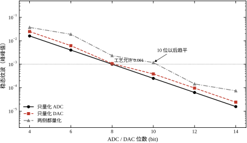
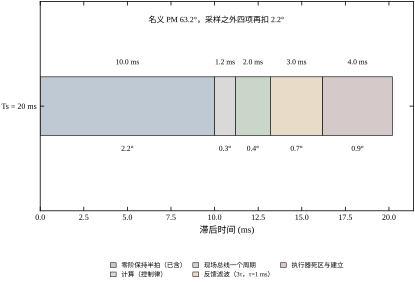

第 84 章回答的是“计算机会给回路带来什么”，本章回答的是“这些东西怎么搭起来”。同一个采样周期、同一组 PI 参数，接线方式不同、A/D 与 D/A 的位置不同、保持器的位置不同，闭环表现可以差出一倍。结构不是画法问题，而是约束问题：它决定了时间账怎么记、幅值账怎么记、频带账怎么记。
任何一个数字控制回路，拆到最细都是六块积木，见表 85-1。
表 85-1 数字控制回路的六块积木
| 块 | 输入 | 输出 | 数学描述 | 引入的损耗 |
|---|---|---|---|---|
| 采样器 | 连续量 y(t) | 序列 y(kT_s) | y_k=y(kT_s) | 时间离散、频谱重复 |
| A/D | 连续幅值 | N 位整数 | 量化台阶 \Delta=R/2^N | 幅值离散、量化噪声 |
| 控制器 | 误差序列 e_k | 控制序列 u_k | C(z) | 计算延迟、舍入 |
| D/A | 数字量 | 幅值 | 台阶 2U_{\max}/2^N | 输出台阶 |
| 保持器 | 离散值 | 分段常值 | G_h(s)=\frac{1-e^{-T_s s}}{s} | 半拍相位、sinc 衰减 |
| 对象 | 执行器输入 | 被控量 | G(s) | 自身惯性 |
把六块按顺序接起来，就是图 85-1。图中把 A/D 与采样器画成一块、D/A 与保持器画成一块，是因为工程上它们通常在同一颗芯片或同一个端子上，分开画只会让图更乱；但算账时必须分开，因为采样是时间账，量化是幅值账，两者不能混。
图 85-1 数字控制回路的六块积木：采样与 A/D 在反馈通道，D/A 与保持器在前向通道，控制器在中间

六块积木一排，三条硬约束就出来了，而且它们互相牵制。
第一条是时间。 采样周期 T_s 决定了信息更新的快慢，也决定了零阶保持带来的半拍滞后 \omega_cT_s/2。延迟拍数 m 决定了控制器“看到的是多久以前的误差”。两者相加，就是回路里所有的纯滞后。本章基准对象 G(s)=1/((0.5s+1)(0.1s+1)) 的交界频率 \omega_c=3.797 rad/s，T_s=20 ms 时半拍只吃掉 2.2°；同样的对象如果 T_s=200 ms，半拍就是 21.8°——同一个结构，换个时钟，裕度差二十度。
第二条是幅值。 ADC 的位数决定测量分辨率，DAC 的位数决定输出分辨率，量程决定“一个台阶代表多少物理量”。本章 T_s=20 ms、R=1.5 的 12 位 ADC，台阶 3.66\times10^{-4}，实测纹波 6.24\times10^{-5}；降到 8 位，台阶 5.86\times10^{-3}，纹波 9.99\times10^{-4}，涨了 16 倍。位数不是“精度”的同义词，它只是台阶宽度的对数（§85.7 会把三种量化位置分开算）。
第三条是频带。 采样会把高于奈奎斯特频率的成分折回基带，保持器会把高频段的幅值按 \mathrm{sinc} 压下去。两条加起来，回路实际能用的频带比连续设计时窄。本章 8 Hz 有用信号叠加 70 Hz 干扰，采样率从 200 Hz 降到 50 Hz，70 Hz 那一支就折到 20 Hz，幅度比 0.588——干扰没有变小，只是换了个名字藏在基带里（表 85-13）。
在展开之前，先把本章基准的一组实测摆出来，建立手感。对象 G(s)=1/((0.5s+1)(0.1s+1))=20/(s^2+12s+20)，PI 参数 K_p=2.0、T_i=0.5 s，T_s=20 ms，延迟一拍：
把 T_s 从 20 ms 拉到 200 ms，参数一个字不改：裕度从 63.2° 掉到 0.9°，超调从 4.8\% 涨到 100.9\%，IAE 从 0.2734 涨到 6.0310——二十三倍。这不是“精度变差”，这是回路从稳定走到临界。表 85-7 是完整扫描。
把 T_s 从 20 ms 压到 1 ms，参数同样不改：裕度只从 63.2° 涨到 69.2°，IAE 只从 0.2734 降到 0.2632。继续压采样周期，收益迅速饱和。这条“左边饱和、右边悬崖”的曲线，是本章所有折中的出发点。
初学者最容易在这里犯错：拿香农定理去校核控制回路的采样周期。表 85-2 把三种标准摆在一起。
表 85-2 三种“采样够不够快”的标准
| 标准 | 判据 | 本章基准的允许值 | 管的是什么 |
|---|---|---|---|
| 香农定理 | f_s>2f_{\max} | T_s<1.5 s（按 0.34 Hz 带宽） | 信号能否重构 |
| 工程经验 | \omega_cT_s\le0.3 | T_s\le79 ms | 裕度是否够用 |
| 本章实测边界 | 超调开始明显上升 | T_s\approx50 ms | 闭环是否还好用 |
三个数差了一个多数量级。香农给的是 1.5 s，实测 200 ms 就已经超调 100.9\%，两者差 7.5 倍；工程经验给 79 ms，与实测“50 ms 开始变差”基本吻合。原因很简单：香农管“看得见”，控制要“来得及”。看得见只需要两个采样点描述一个周期，来得及要求采样间隔远小于回路自己的响应时间。工程上说的“每周期采 5–10 次”，换成相位就是半拍 18°–36°，正好是裕度能承受的量级。
本章讲结构，所以有四件事只点到不展开：
反过来，本章有两样东西是后面几章都要用的：离散化误差的量级（§85.5）与位数预算的算法（§85.9）。第 86 章讲实时软件时要回到采样周期，第 89 章讲通信时要回到总线周期，口径都在本章。
误解一：“先把连续控制器设计好，最后离散化一下就行。” 离散化当然要做，但顺序不能反。本章表 85-8 显示：T_s=20 ms 时三种离散化方法的裕度分别是 63.2°、62.9°、63.0°，差不到 0.3°，怎么离散都行；T_s=100 ms 时三者变成 36.5°、38.6°、37.9°，差 2.1°，方法开始有影响。方法的选择取决于 \omega_cT_s，而不取决于哪种方法“更精确”。更关键的是：100 ms 这一档三种方法都只剩三十几度，换成哪种都救不回来——问题在 T_s，不在方法。
误解二：“位数越高越好，直接上 16 位。” 表 85-12 里，ADC 从 12 位提到 14 位，纹波从 6.24\times10^{-5} 降到 1.56\times10^{-5}，确实降了四倍；但双侧量化（ADC+DAC）从 10 位提到 12 位，纹波从 1.18\times10^{-3} 降到 1.45\times10^{-4} 之后，再提到 14 位只降到 7.35\times10^{-5}，而 IAE 几乎不动（0.2737\to0.2735）。到了某个位数，限制精度的已经不是量化，而是别的东西。
误解三：“采样周期越小越安全。” 表 85-7 里 T_s 从 20 ms 降到 1 ms，裕度只多 6°，IAE 只少 3.7\%，但 CPU 负载涨了二十倍。§85.9 的位数预算表还会显示：T_s 缩小时积分器每拍累积的噪声方差按 T_s 减小，可每拍固定开销（中断、采样、通信）不变，总开销随 1/T_s 线性上涨。采样的收益是对数的，成本是线性的，交点就是工程上该停的地方。
三个误解的共同点：都把结构当成“可以事后调”的参数，而它其实是“设计前就要定”的约束。
第一遍读 §85.1 与 §85.5。前者给六块积木与三条约束，后者给采样周期扫描表。这两节读完，你已经知道“结构选错会怎样”。
第二遍读 §85.2 与 §85.6。前者是数学（ZOH、精确离散、三种差分），后者是稳定性（Jury 判据、谱半径、纹波）。公式不必背，记住三件事：半拍是固定税、每拍延迟是累进税、位数决定台阶。
第三遍读 §85.7 到 §85.10。这四节是“怎么选”：位数、多速率、抗混叠、工程折中，结论都以“该取多少”的形式给出。
§85.11 与 §85.12 最后读。前者是边界（什么时候不该用这套结构），后者是代码（数字怎么来的、怎么复现）。
把“采样—计算—总线—执行器”摊在时间轴上，一次控制动作其实经过四个时间戳。以本章基准为例：
这四个数加起来是 7.2 ms，再加上反馈滤波的 3 ms，合计 10.2 ms——正好是半拍。表 85-15 的第二行到第五行就是这四个数。它们全部落在一个 T_s=20 ms 的周期之内，所以 m 只取 1。
这个时间轴有个实用价值：它告诉你哪一段值得优化。把计算从 1.2 ms 压到 0.2 ms，时间轴上只省 1 ms，相位收益 0.2°；把总线从 2 ms 换成 1 ms，收益同样只有 0.2°。但如果总线是 40 ms 的慢总线，合计变成 44.2 ms，m 从 1 跳到 2，相位一下掉 4.4°。优化的价值不取决于省了多少毫秒，而取决于有没有跨过拍边界——这是 §85.7.2 那条“阶梯收益”的第一处体现。
反过来，时间轴也解释了为什么“执行器 4 ms”这一项最值得实测：它常常被当成“机械的事”排除在控制账之外，但它在时间轴上排在最后，一旦超过 T_s，就直接把 m 顶上去。
本章记号较多，先把约定固定下来，后文不再重复。
| 记号 | 含义 | 本章取值与单位 |
|---|---|---|
| T_s | 采样周期 | 20 ms |
| \omega_s | 采样角频率，2\pi/T_s | 314.2 rad/s |
| \omega_c | 开环幅值交界频率 | 3.797 rad/s |
| \omega_cT_s | 无量纲采样比 | 0.0759 |
| m | 计算与传输延迟（整拍） | 1 |
| N_{adc},N_{dac} | 转换器位数 | 12,12 |
| R | ADC 满量程（峰峰值） | 1.5（归一化） |
| U_{\max} | 执行器输出上限 | 5.0 |
| y | 被控量，归一化 | 设定值 1.0 |
三条口径要特别说明。
第一，y 归一化到 [0,1]，设定值取 1.0。 这样“超调 4.8\%”与“纹波 2.19\times10^{-8}”都是相对量，换到实际工程单位只需乘一个系数。归一化不是为了省事，而是为了让“不同量纲的回路”能用同一张表比较。
第二，纹波一律指末段峰峰值，不是标准差。 表 85-11 的纹波是仿真末 30% 时间段内 \max y-\min y；式 (85-13) 给的 \sigma_q 是标准差。两者差一个约 3–6 倍的系数，比较时必须同口径，这是读表最容易出错的地方。
第三，本章说“度”时，一律指相位裕度的度，不是弧度。 式 (85-26) 两边都给了单位，正文引用时只写数值加度数符号。
本章的结论可以先给出来：结构参数必须在设计阶段定死，事后改不回来。这句话常被误读成三种意思，每一种都能用本章的数字驳掉。
误读一：“那就把采样率提得越高越好。” 不是。把 T_s 从 20 ms 一路压下去，PM 只再涨几个度（本章扫到的最好一档是 68.8°，比基准多 5.6°）；而按式 (85-31)，单回路 CPU 占用从 1.5\% 涨到 30\%，涨二十倍。这 5.6° 通常不是瓶颈——真正的瓶颈是延迟 m 与量化台阶，它们不随 T_s 改善。“够快”的标准是 \omega_cT_s\le0.15，不是“尽可能快”。
误读二：“那就把位数加满。” 也不是。ADC 从 12 位到 16 位，纹波从 1.45\times10^{-4} 降到 9\times10^{-6}，降了 16 倍，看起来很值；但变送器本身的非线性与温漂是 10^{-3} 量级，比 16 位 ADC 的分辨率高两个数量级。此时系统的精度瓶颈在传感器，不在 ADC。位数加到“小于传感器误差”就该停，再往上买的是数字，不是精度。
误读三：“结构不好，靠先进算法补。” 补不了。§85.9.9 算过：Smith 预测器在 m=1 时只能拿回 4.4°，而对模型误差极敏感；状态观测器能配极点，但它自己也在采样系统里工作，采样间的行为仍受 T_s 约束。算法改变的是“控制器看到什么”，改不了“结构漏掉了什么”。
三种误读的共同根源，是把“结构”当成了“参数”。参数的错可以调回来，结构的错只能重做——这就是本章把它放在“计算机控制”部分最前面讲的原因：先决定骨架，再谈血肉。
这一节把六块积木的数学写全。写法上刻意“从物理到公式”：每一个式子先说是哪块积木带来的，再说它长什么样。读者如果只想知道结论，记住 §85.2.7 的整链方程即可。
连续信号 y(t) 以 T_s 采样，得到序列 y_k=y(kT_s)。理想采样在频域的效果是把原频谱以 \omega_s=2\pi/T_s 为间隔复制无穷多份：
Y^*(j\omega)=\frac{1}{T_s}\sum_{k=-\infty}^{\infty}Y\big(j(\omega-k\omega_s)\big) \tag{85-1}
式 (85-1) 说明两件事。第一，采样不丢信息，但加了信息：基带之外多出无穷多个副本。第二，只要原信号带宽小于 \omega_s/2，副本之间不重叠，用理想低通就能把原信号取回来——这就是采样定理：
\omega_s>2\omega_{\max}\quad\Longleftrightarrow\quad T_s<\frac{1}{2f_{\max}} \tag{85-2}
如果式 (85-2) 不满足，副本重叠，高频成分落进基带，再也分不出来。落在哪个频率由式 (85-3) 决定：
f_a=\big|f-kf_s\big|,\qquad k=\mathrm{round}(f/f_s) \tag{85-3}
本章的算例：f=70 Hz，f_s=50 Hz 时 k=1，f_a=|70-50|=20 Hz；f_s=40 Hz 时 k=2，f_a=|70-80|=10 Hz；f_s=25 Hz 时 k=3，f_a=|70-75|=5 Hz。表 85-13 的实测峰与这三个数完全一致，幅度比在 0.55–0.63 之间——折回不衰减幅度，只改频率。这是“仿真很好、上机啸叫”最常见的来源。
D/A 之后的保持器把离散值变成阶梯。零阶保持的冲激响应是宽度 T_s、高度 1 的矩形，传递函数为
G_h(s)=\frac{1-e^{-T_s s}}{s} \tag{85-4}
把 s=j\omega 代进去，用 e^{-j\omega T_s/2} 提出半拍，得到幅相分离的形式：
G_h(j\omega)=T_s\,e^{-j\omega T_s/2}\cdot\frac{\sin(\omega T_s/2)}{\omega T_s/2} \tag{85-5}
式 (85-5) 是本章最重要的一条。它说保持器做了两件事：相位上无条件滞后半拍 \omega T_s/2，幅值上按 \mathrm{sinc}(\omega T_s/2) 衰减。半拍滞后与频率成正比，所以它是“固定税”——只要采样，就交这一笔；sinc 衰减在 \omega T_s 小时几乎为 1，\omega T_s=0.5 时 \mathrm{sinc}(0.25)=0.9896，掉 1\%，可以忽略；\omega T_s=\pi 时掉到 2/\pi=0.637，才需要认真处理。
本章基准 \omega_cT_s=3.797\times0.02=0.0759，半拍 2.2°，sinc =\sin(0.038)/0.038=0.99976，衰减 0.024\%。所以在这个采样率下，保持器的幅值影响可以完全忽略，只算相位。这条结论省掉了大量无谓的纠结：只要 \omega_cT_s<0.3，就不要去算 sinc。
连续对象前面串一个零阶保持，等价的离散传递函数是
G(z)=(1-z^{-1})\,\mathcal{Z}\left\{\frac{G(s)}{s}\right\} \tag{85-6}
式 (85-6) 是“精确 ZOH 离散”的定义式，它保证采样点上的响应与连续系统完全一致。工程上更常用状态空间算法，因为不用查表：
A_d=e^{AT_s},\qquad B_d=\int_0^{T_s}e^{A\tau}B\,\mathrm{d}\tau \tag{85-7}
B_d 的积分可以用一个增广矩阵一次算出：
\exp\left(\begin{bmatrix}A&B\\0&0\end{bmatrix}T_s\right)=\begin{bmatrix}A_d&B_d\\0&I\end{bmatrix} \tag{85-8}
式 (85-8) 就是代码里 zoh() 的实现依据（§85.12）。本章对象 A=\begin{bmatrix}-12&-20\\1&0\end{bmatrix}，T_s=20 ms 时算出的 A_d 的两个特征值是 e^{-2T_s}=0.9608 与 e^{-10T_s}=0.8187，正好是连续极点 s=-2,-10 按 z=e^{sT_s} 映射的结果。这不是巧合：精确离散保极点映射，近似离散不保。
近似离散的本质是把 s 换成 z 的有理式，三种常见替换见表 85-3。
表 85-3 三种离散化替换与稳定性
| 方法 | 替换式 | 稳定域映射 | 本章 T_s=20 ms 的裕度 |
|---|---|---|---|
| 前向欧拉 | s\to\dfrac{z-1}{T_s} | 左半平面映到圆外，可能失稳 | 62.9° |
| 后向欧拉 | s\to\dfrac{z-1}{T_sz} | 左半平面映到圆内，恒稳 | 63.2° |
| 双线性 | s\to\dfrac{2}{T_s}\dfrac{z-1}{z+1} | 一一映射，保稳定与频率形状 | 63.0° |
三者的差别在 \omega T_s 小时看不出来（本章 0.3° 以内），大了就明显。双线性变换还有个副作用：频率轴被压缩，\omega_a=\frac{2}{T_s}\tan\frac{\omega T_s}{2}，设计时要预畸变（§85.5）。工程上默认选后向欧拉，理由不是精度，而是它不会因为采样过快而失稳，且实现只要一行累加。
连续 PI C(s)=K_p(1+\frac{1}{T_is}) 用后向欧拉替换，得
C(z)=K_p+\frac{K_pT_s}{T_i}\cdot\frac{z}{z-1} \tag{85-9}
式 (85-9) 对应代码里“每拍 I\mathrel{+}=e_kT_s，u=K_pe_k+K_pI/T_i”，与第 84 章式 (84-7) 同源。把控制器、对象、延迟串起来，闭环为
T(z)=\frac{C(z)G(z)z^{-m}}{1+C(z)G(z)z^{-m}} \tag{85-10}
稳定性由分母决定：
1+C(z)G(z)z^{-m}=0 \tag{85-11}
式 (85-11) 有 m 个 z^{-1}，等价于特征多项式乘 z^m 后求根。本章的谱半径就是这样算的：T_s=20 ms、K_p=2 时 \rho=0.9620，与 e^{-2T_s}=0.9608 只差 0.0012——主导极点还是对象自己的慢极点，控制器没有把它推得更远。这也解释了为什么表 85-10 里 K_p 从 2 加到 8，\rho 几乎不动：慢极点占主导，加增益只改快极点。
ADC 把连续幅值折成 N 位整数，台阶为
\Delta=\frac{R}{2^N} \tag{85-12}
其中 R 是满量程（峰峰值，不是半宽）。量化误差 e_q 在 [-\Delta/2,\Delta/2] 内近似均匀分布，方差为
\sigma_q^2=\frac{\Delta^2}{12} \tag{85-13}
量化噪声从测量端进入，经过闭环传到输出，传递函数是灵敏度函数：
Y_q(z)=\frac{G(z)z^{-m}}{1+C(z)G(z)z^{-m}}\,Q(z) \tag{85-14}
式 (85-14) 的直流增益是 \frac{G(1)}{1+C(1)G(1)}，本章 G(1)=1、C(1) 很大，所以低频段量化几乎不传到输出，高频段才传。这是“量化误差表现为纹波而不是静差”的原因，也是 §85.7 里纹波随位数近似按 2^{-N} 下降的依据。
把六块积木串起来，一条链的完整关系是：
y(t)=\underbrace{\mathcal{H}\{u_k\}}_{\text{保持}}\!*\,g(t),\quad u_k=C(z)\big[\underbrace{\mathcal{Q}_{adc}\{r-y_k\}}_{\text{量化}}\big],\quad y_k=y(kT_s+mT_s)
这条链里有四个可调的量：T_s（时间）、m（延迟）、N_{adc} 与 N_{dac}（幅值）、保持器类型（默认零阶）。本章后面每一节，都是在问“这四个量该取多少”。注意 m 已经出现在 y_k 的下标里：延迟不是附加项，它是结构的一部分，改延迟等于改结构。
公式列完，最好的检验是代一组数走一遍。用本章基准（T_s=20 ms、K_p=2、T_i=0.5 s、R=1.5、U_{\max}=5、12 位）：
这七个数字连起来，就是本章所有表格的“根”。比如读到表 85-7 里 20 ms 的 PM=63.2°，可以自己核对：连续 69.5° 减去半拍 2.17°、整拍 4.35°，剩 63.0°，与实测差 0.2°——差值来自离散化把相位交界频率略微拉低，量级正确。手算能对上仿真，说明模型没有漏项。
再比如读到表 85-12 里 12 位 ADC 的纹波 6.24\times10^{-5}，与 \sigma_q=1.06\times10^{-4} 比，前者反而更小。这不是算错：\sigma_q 是量化误差本身的标准差，纹波是它经过灵敏度函数之后的峰峰值，而灵敏度函数在纹波主频上的增益小于 1（式 85-14）。“输入噪声”与“输出纹波”之间永远隔着一个闭环传递函数，两者不能直接等号。
式 (85-8) 在代码里只有五行，但它不是数值技巧，而是一个恒等式。把增广矩阵 M=\begin{bmatrix}A&B\\0&0\end{bmatrix} 自乘：
M^2=\begin{bmatrix}A^2&AB\\0&0\end{bmatrix},\qquad M^k=\begin{bmatrix}A^k&A^{k-1}B\\0&0\end{bmatrix}
于是矩阵指数按级数展开后，右上块正好是 \sum_{k\ge1}\frac{T_s^k}{k!}A^{k-1}B=\int_0^{T_s}e^{A\tau}B\,\mathrm{d}\tau，左下块恒为零，右下块是单位阵。这就是式 (85-8) 的全部内容：把“解一个积分”换成“算一次矩阵指数”。
这个写法有三个工程好处。第一，精度：expm 用 Padé 近似加缩放平方，误差在机器精度量级，比直接数值积分稳。第二，一次算完：A_d 与 B_d 出自同一次分解，不会出现“两者用的 T_s 略有差异”的隐蔽错误。第三，可直接推广：对象有多个输入时，B 换成矩阵即可，代码一行不改。
代价是矩阵维数翻倍，计算量按 (2n)^3 增长。本章 n=2，翻倍后是 4\times4，可以忽略；如果对象是 50 阶，就应该改用 Krylov 子空间或分块算法。这条边界要记住：增广矩阵法适合 n<20 的对象，再大就要换算法。
连续设计里挑极点，习惯先定阻尼比 \zeta 和自然频率 \omega_n，极点落在 s=-\zeta\omega_n\pm j\omega_n\sqrt{1-\zeta^2}。映射到 z 平面是 z=e^{sT_s}，于是模与角分开：
|z|=e^{-\zeta\omega_nT_s},\qquad \angle z=\omega_n\sqrt{1-\zeta^2}\,T_s
这两行说明了一件容易被忽略的事：采样不改变阻尼比与自然频率这两个“设计参数”，但它把极点往单位圆内推的比例，完全由 \zeta\omega_nT_s 决定。\zeta\omega_n 是衰减率（包络线 e^{-\zeta\omega_n t}），乘上 T_s 就是“一个采样周期内包络衰减了几个 e”。
拿本章基准算：主导极点 s=-2（相当于 \zeta\omega_n=2），T_s=20 ms，|z|=e^{-0.04}=0.9608，一个采样周期内包络只掉 3.9\%；T_s 换成 100 ms，|z|=e^{-0.2}=0.8187，一拍掉 18.1\%。T_s 大五倍，一拍内衰减多四倍多，这就是“采样粗了以后响应变’脆’”的几何来源。
再拿一对典型二阶极点算：\zeta=0.7、\omega_n=4 rad/s，对应 s=-2.8\pm j2.857，\omega_d=2.857 rad/s。T_s=20 ms 时 |z|=e^{-0.056}=0.9455、\angle z=0.0571 rad =3.27°；T_s=100 ms 时 |z|=e^{-0.28}=0.7558、\angle z=16.4°。角度从 3.3° 涨到 16.4°，涨了五倍；模从 0.946 掉到 0.756。后者在离散根轨迹上已经不是“靠近 1 的主导极点”，而是明显的快极点，闭环形状会变。
这条换算还有一个用法：反查 T_s 的上限。若要求“一个采样周期内包络衰减不超过 5\%”，即 e^{-\zeta\omega_nT_s}\ge0.95，得 \zeta\omega_nT_s\le0.0513。本章 \zeta\omega_n=2，得 T_s\le25.6 ms——与 \omega_cT_s\le0.3 给出的 79 ms 相比，这条约束严得多。原因是 \omega_cT_s\le0.3 只管相位损失，管不到“极点被推得多深”。两条判据要一起用：前者管稳定裕度，后者管动态形状。
顺带说一句等阻尼线的形状。连续域里等 \zeta 线是从原点出发的两条射线；经 z=e^{sT_s} 映射后，射线变成对数螺旋，终点都收敛到单位圆上的 e^{\pm j\pi/2} 方向附近（对 \omega_n\to\infty）。所以“在 z 平面上画一条等阻尼线”不能画直线，得画螺旋——这也是离散域设计图不如连续域直观的原因之一。
式 (85-2) 的采样定理只保证一件事：带限信号在采样率足够时可以被唯一重建。它没说“采样器是理想的”，而实际电路离理想有三段距离，每一段都在本章的账上。
前提一：采样是瞬时的。 实际 A/D 有一个孔径时间 t_a（采样保持窗口），窗口内信号仍在变，等效于一次平均滤波，幅值按 \mathrm{sinc}(\omega t_a/2) 衰减、相位滞后 \omega t_a/2。本章 t_a 按 1 μs 估，在 \omega_c=3.797 rad/s 处相位只有 1.1\times10^{-4}°，可以完全忽略；但在 628 rad/s 的伺服回路里是 0.018°，也仍然很小。孔径时间要到 \omega t_a 接近 0.1 才需要记账，那对应 t_a=160 μs，普通的逐次逼近型 ADC 远好于此。
前提二：采样时刻是等间隔的。 采样定理的推导假设 t_k=kT_s 精确成立。实际定时器有分辨率、任务有抢占，t_k=kT_s+\delta_k，\delta_k 就是§85.10.3 说的抖动。抖动的效果是把时间误差折成幅值误差：\Delta y\approx\dot y\,\delta。本章稳态时 \dot y 很小，抖动几乎无害；但阶跃瞬间 \dot y 可达 2 /s，\delta=0.1 ms 就带来 2\times10^{-4} 的幅值误差，与 12 位 ADC 的台阶 3.66\times10^{-4} 同量级。这是“稳态很好、一到阶跃就毛刺”的一个来源。
前提三：重建只在采样点之间“猜”。 零阶保持给出的是阶梯，它的频谱是基带乘 sinc 加上无穷多高频副本（§85.2.2）。采样定理保证“能重建”，不保证“保持器会重建”——真正把阶梯变回连续信号的是对象本身的低通特性。本章对象在 \omega_s=314 rad/s 处的增益是 20/\sqrt{(314^2-20)^2+(12\times314)^2}\approx2.0\times10^{-4}，把副本压了 74 dB，所以阶梯看起来是光滑的。若对象带宽高（比如纯增益环节），就必须在 D/A 之后再加模拟低通，否则副本会原样出现在输出上。
三条前提的共同点：采样定理是“能不能”的判据，本章讲的是“好不好”的账。定理说 \omega_s>2\omega_{\max} 就够，工程上却要 \omega_s\ge20\omega_c（即 \omega_cT_s\le0.3），差的那一个数量级，买的是这三条前提的余量。
结构设计的顺序不能乱。先定带宽，再定采样，再定延迟与位数，最后验裕度——颠倒任何两步，都会白算一遍。表 85-4 是本章用的八步清单。
表 85-4 数字控制系统结构的八步设计清单
| 步 | 做什么 | 输入 | 输出 | 判据 |
|---|---|---|---|---|
| 1 | 定闭环带宽 \omega_c | 调节时间/超调要求 | \omega_c | 由 \omega_c\approx3/t_r 估 |
| 2 | 定采样周期 T_s | \omega_c | T_s | \omega_cT_s\le0.3 |
| 3 | 定延迟拍数 m | 计算、总线、滤波 | m 与总滞后 | 相位损失 \le10° |
| 4 | 选 A/D 位数与量程 | 噪声、精度要求 | N_{adc}、R | 纹波 \le 允许值 |
| 5 | 选 D/A 位数与量程 | 执行器分辨率 | N_{dac}、U_{\max} | 台阶 \le 死区的 1/3 |
| 6 | 算离散对象 G(z) | G(s)、T_s | A_d,B_d 或 G(z) | 采样点响应与连续一致 |
| 7 | 验裕度 | C(z)G(z)z^{-m} | PM、GM、\rho | PM\ge45°、\rho<1 |
| 8 | 仿真三件事 | 上一步的模型 | 阶跃/扰动/量化 | 超调、纹波、IAE 达标 |
很多人一上来就看对象的 Bode 图，问“这个对象能跑多快”。这个问题没有唯一答案：带宽由需求定，对象只决定“能不能达到”。给定调节时间要求 t_r，二阶近似下 \omega_c\approx3/t_r；给定超调要求，先换相位裕度（\zeta\approx PM/100），再验算。本章基准对象的时间常数是 0.5 s 与 0.1 s，慢极点 2 rad/s，实际能稳到的带宽是 3.8 rad/s——比慢极点快 1.9 倍，这是 PI 零点补偿换来的，不是对象自带的。
T_s 的唯一硬判据是 \omega_cT_s\le0.3，对应每周期约 21 个采样点：
\omega_cT_s\le0.3\quad\Longleftrightarrow\quad N_s=\frac{2\pi}{\omega_cT_s}\ge21 \tag{85-15}
本章 \omega_c=3.797 rad/s，0.3/\omega_c=79 ms。表 85-7 的实测支持这个上限：50 ms 时裕度还有 53.4°、超调 14.1\%；100 ms 时裕度 36.5°、超调 38.8\%。79 ms 这条线卡在“还能用”与“开始难用”之间，说明判据本身是准的。工程上再留一倍余量，取 T_s=20–40 ms，就得到本章的基准值。
延迟必须换成拍数才有意义，因为控制器只认“这一拍用的误差是几拍前的”：
m=\mathrm{round}\left(\frac{T_c+T_{bus}+T_f}{T_s}\right) \tag{85-16}
本章的典型值：计算 1.2 ms、总线 2.0 ms、滤波 3.0 ms，合计 6.2 ms，T_s=20 ms 时 m=\mathrm{round}(0.31)=0——不足一拍，按一拍算（因为采样是边沿触发，误差至少晚一拍才被用上）。所以基准取 m=1。这个“向上取整”是很多人漏掉的一步：算出来 0.31 拍，实际效果是 1 拍，因为下一拍之前控制器不会重新读。
位数不能单独定，必须连量程一起。同一个 12 位 ADC，满量程 1.5 时台阶 3.66\times10^{-4}，满量程 15 时台阶 3.66\times10^{-3}——量程放大十倍，等于丢了三位半。所以顺序是：先定量程（按被控量的物理范围留 20%–50% 余量），再按允许纹波反解位数：
N\ge\log_2\frac{R}{\Delta_{\text{allow}}} \tag{85-17}
本章的满量程 R=1.5，若允许纹波 10^{-3}，则 N\ge\log_2(1500)=10.6，向上取 12 位，留 1.4 位余量。表 85-12 实测 12 位纹波 6.24\times10^{-5}，比允许值低一个数量级——因为纹波不只由台阶决定，还由灵敏度函数在纹波频率上的增益决定，式 (85-17) 是保守估计。
算 G(z) 时有个容易忽略的点：对象离散必须用精确 ZOH（式 85-6），控制器离散才用差分近似。原因是对象前面真的有一个零阶保持器，而控制器前面没有。把对象也用差分近似，等于凭空多加了一次近似，本章 T_s=20 ms 时误差不大，T_s=100 ms 时就会与实测偏离。
只看 PM 不够，要看三个：PM\ge45°、GM\ge6 dB、\rho<1。三者分工不同：PM 管超调，GM 管模型误差与饱和，\rho 管离散系统的绝对稳定。本章基准 63.2°、18.7 dB、0.9620，三项都过。表 85-9 里 m=8 时 PM=32.7°、GM=4.8 dB，两项同时破线，\rho 却还有 0.9757——谱半径最不敏感，不能拿它当唯一判据。
结构仿真的最低要求是三件事一起做：阶跃（看超调与上升）、长时恒定（看纹波与极限环）、量化与延迟同时打开（看最坏组合）。只做阶跃会漏掉纹波，只做无量化会高估精度。本章 §85.12 的脚本把这三件事都放在一条链上，改一个参数就能重跑。
如果先定位数再定采样周期，会出现两种返工。第一种：位数按 16 位选了，采样周期定在 200 ms，裕度只剩 0.9°，回路根本跑不起来，16 位白买。第二种：采样周期按 1 ms 定了，位数只有 8 位，纹波 9.99\times10^{-4}，比 1 ms 带来的精度收益大两个数量级，快采样也白做。时间账与幅值账是乘法关系，短板决定结果，所以必须先算时间（第 1–3 步）、再算幅值（第 4–5 步），最后统一验（第 6–8 步）。
八步清单给的是主线，真正上线前还有三项核查，它们不属于任何一步，却能让前面八步白做。
核查一：对象的模型误差。 本章对象 G(s)=1/((0.5s+1)(0.1s+1)) 是标称值，现场的时间常数可能差 20\%、增益可能差 30\%、纯延迟可能多一拍。把这三个偏差代入式 (85-11) 各算一遍：增益 +30\% 相当于 K_p 从 2 加到 2.6，T_s=20 ms 时离临界值 17.31 还很远；时间常数 +20\% 会把 \omega_c 拉低，裕度反而略升；最危险的是延迟多一拍，PM 直接掉到 58.8°。所以核查的重点不是增益，而是延迟。
核查二：传感器与执行器的时间常数。 这两项在八步里只以“T_f”和“执行器建立”出现，很容易被填成估算值。经验是：凡是没有实测过的项，一律按实测值的两倍估。本章表 85-15 里执行器 4 ms 是乐观值，气动阀常常是 40 ms 以上；一旦如此，合计从 10.2 ms 涨到 46 ms，m 从 1 跳到 3，PM 再掉 8.7°。
核查三：时钟与同步。 八步假设采样间隔严格等于 T_s。实际系统的定时器有 ppm 级漂移、中断有 μs 级抖动、总线同步有 μs 级误差。本章 §85.10.3 会说明：1 ms 的采样抖动等效 2\times10^{-3} 的幅值误差，这一项比 12 位 ADC 的台阶大五倍，必须先测，再决定要不要加硬件触发。
三项核查的共同点是：它们都不改变结构，只改变结构的“有效值”。八步给出的是设计值，三项核查给出的是现场值，两者之间的差距就是设计余量该留多少的依据。
八步走完，应该产出一张表，而不是一段描述。本章的参数表是：
| 参数 | 取值 | 依据 |
|---|---|---|
| T_s | 20 ms | 式 (85-15)，\omega_cT_s=0.076 |
| m | 1 | 式 (85-16)，不足一拍按一拍 |
| N_{adc} / 满量程 | 12 位 / 1.5 | 式 (85-17)，10.6 位向上取 |
| N_{dac} / 满量程 | 12 位 / 10 | 台阶 2.44\times10^{-3}，小于死区 |
| 保持器 | 零阶 | D/A 芯片自带 |
| 控制器离散化 | 后向欧拉 | 稳定域恒在圆内 |
| K_p / T_i | 2.0 / 0.5 s | 第 44 章整定，本章只验 |
| 验收指标 | PM\ge45°、\rho<1、纹波 \le10^{-3} | 表 85-5、表 85-12 |
这张表要写满八行，不能留空。留空的项在实现时会被“默认值”填上，而默认值往往是错的：默认 m=0 会低估延迟，默认 10 位会低估纹波，默认前向欧拉会在高采样率下失稳。表填满，等于把设计意图完整交给了实现者。
表里还有一处容易被忽略的对应关系：N_{dac} 的判据不是“纹波”，而是“台阶小于执行器死区的三分之一”。本章执行器死区按满量程 10 的 0.5\% 估，即 0.05，台阶 2.44\times10^{-3} 远小于它，所以 12 位够用。若执行器是高分辨率伺服阀，这条判据会反过来变成主导，那时该加的是 DAC 位数，而不是 ADC 位数。
教科书里八步是串行的，真实项目里没有人给你八段时间。能压缩的原因是这八步里有五步可以查表或手算，只有两步真需要仿真。下面按“半天”给一个可操作的排法。
上午前半小时：定 \omega_c。 从需求反推：调节时间 t_s\approx4.6/\omega_c（2\% 准则、\zeta\approx0.7 时）。若要求 t_s\le1 s，则 \omega_c\ge4.6 rad/s。本章基准 3.797 rad/s 对应 t_s\approx1.2 s，与实测调节时间 0.942 s 吻合得不错——实测更快是因为 PI 零点对消后系统接近一阶，一阶没有 4.6 这个系数，按 3/\omega_c 估更准。这一步不用仿真，只要一支笔。
上午后半小时：定 T_s 与 m。 两条判据一起卡：\omega_cT_s\le0.3 给上限 79 ms，\zeta\omega_nT_s\le0.05 给上限 26 ms，取小者，再往“标准周期”上靠（1、2、5、10、20、50、100 ms）。落到 20 ms。m 按实际信号链数：传感器转换、总线、控制器计算、DAC 建立，各段加起来除以 T_s 向上取整。这一步也不用仿真。
下午前一小时：定位数与量程。 先定量程（按工艺可能的最大偏差，不是按量程上限），再按式 (85-17) 反解 N_{adc}，最后按“台阶小于死区三分之一”定 N_{dac}。这一步可以手算，但要拿真实传感器的输出范围核一遍，不能照抄铭牌——很多变送器标 4–20 mA，实际有效段只有量程的 60\%。
下午后两小时：只做两组仿真。 第一组是基线阶跃，核对 PM、超调、调节时间三个数；第二组是 T_s 扫描（本章表 85-7 那种），确认 T_s 再大一档就明显变差——这叫“确认自己站在悬崖的哪一侧”。两组仿真都在 ch085_sim.py 里，改一行 CFG 即可。
收尾半小时：把 §85.3.10 那张参数表填满。 填不满就说明前面某一步没做完。
这个排法的关键判断是：八步里最贵的不是计算，是“确认”。 定 \omega_c、定 T_s、定位数，三件事各自十分钟就能出数；剩下的时间应该花在“这个数在实物上还成立吗”——传感器带宽够不够、执行器死区多大、时钟抖动多少。本章 §85.3.9 的三项核查就是干这个的，它们不产出新参数，只否决旧参数。
本章对象 G(s)=20/(s^2+12s+20) 没有纯延迟。但真实对象常有：输送带、管道、燃烧过程，延迟从几十毫秒到几分钟。这时八步里只有第三步（延迟记账）要改，但改法有讲究。
先看一件容易搞错的事：对象延迟不能用“提高采样率”消掉。e^{-\tau s} 是物理传输时间，T_s 再小它也还在。提高采样率只是让“延迟的量化误差”变小，不改变延迟本身。这一点与 m 的性质相同：mT_s 才是延迟，m 与 T_s 分开看没有意义。
记账分两步。第一步，把对象延迟换成拍数：m_\tau=\tau/T_s，非整数时向上取整。设 \tau=80 ms、T_s=20 ms，得 m_\tau=4。第二步，与信号链延迟相加：本章信号链是 10.2 ms（§85.1.8），已占 m=1；总延迟 =4+1=5 拍，即 100 ms。按表 85-9，m=5 的附加相位是 21.7°，PM 从 63.2° 掉到约 45.8°——刚好压线。
向上取整是保守的，保守多少可以算。\tau=50 ms、T_s=20 ms 时 m_\tau=2.5，取整到 3 拍相当于多算 10 ms，即多 2.17° 的相位损失。若这点余量不能浪费，就得用“分数延迟”处理：把余数 0.5 拍并入零阶保持的等效半拍，即总延迟按 2.5+0.5=3 拍算——结果与向上取整一样，但物理上更清楚：余数不是被丢掉，而是与保持器的半拍合并了。这也是本节唯一需要动脑的地方。
第二个改动是判据。\omega_cT_s\le0.3 仍然成立，但它已经不是主导约束：m=5 时相位损失 21.7°，比 T_s 本身的影响大得多。此时该做的是先减延迟（换快速总线、把计算挪到中断里、缩短执行器行程），再考虑减 T_s——减 T_s 只能改善半拍那一项，对 m_\tau 无效。这个判断顺序与 §85.9.6 的优先级表一致：延迟在表的顶部，采样率在中部。
最后一条边界：若 m_\tau 已经大到 PM 无法满足（比如 m=10），不要靠调 K_p 硬撑，那会把带宽压到很低。正确做法是改结构：Smith 预测器（§85.9.9）或串级控制把延迟包在内环之外。这也是 §85.9.9 说“m\ge5 才值得上 Smith”的原因——低于 5 拍时，收益抵不上模型误差的风险。
要看清楚“离散带来了什么”，得先有一把尺子。这把尺子就是同一个对象、同一组 PI 参数在连续域里的表现。
连续回路的开环是
L(s)=C(s)G(s)=K_p\left(1+\frac{1}{T_is}\right)\cdot\frac{20}{s^2+12s+20} \tag{85-18}
K_p=2.0、T_i=0.5 时，C(s)=2(1+2/s)=2(s+2)/s。注意这个零点在 s=-2，正好抵消对象的慢极点 -2——PI 的积分时间取对象的主时间常数，是“零极点对消”的标准做法。对消之后，开环近似变成 40/(s(s+10))，是一个积分加一个快极点，交界频率约 \sqrt{40}=6.3 rad/s。实际因为对消不完全（对象还有 -10 的极点与增益 1），求得 \omega_c=3.74 rad/s（T_s=100 μs 时，近似连续），相位裕度 69.4°。
连续域的阶跃响应指标：超调接近 0，上升时间由 \omega_c 决定。这就是“理想”：没有采样、没有保持、没有量化、没有延迟。后面所有表格里的数字，都是从这个理想往下降的结果。
连续设计隐含三条假设，每一条在数字实现里都不成立：
假设一：控制器瞬时响应。 连续 C(s) 的输出在 t 时刻就用了 t 时刻的误差。数字实现里，误差要等到下一个采样边沿才被读到，控制量要等到下一个周期才更新，两者之间至少半拍。
假设二：测量无噪声、无量化。 连续设计里 y(t) 是实数。数字实现里 y_k 是 N 位整数，分辨率 \Delta=R/2^N。
假设三：执行器连续可调。 连续 u(t) 可以取任意值。数字实现里 u 既被 DAC 量化，又被零阶保持成台阶。
三条假设对应本章的三笔账：时间账、幅值账、频带账。表 85-5 把连续与离散的关键指标并列，差距一目了然。
表 85-5 连续基线与离散实现（T_s=20 ms、m=1、无量化）
| 指标 | 连续（T_s=100 μs 近似） | 离散（T_s=20 ms） | 差值 |
|---|---|---|---|
| 交界频率 | 3.746 rad/s | 3.797 rad/s | +1.4\% |
| 相位裕度 | 69.4° | 63.2° | -6.2° |
| 增益裕度 | 44.5 dB | 18.7 dB | -25.8 dB |
| IAE | 0.2632 | 0.2734 | +3.9\% |
| 超调 | 1.8\% | 4.8\% | +3.0 个百分点 |
表里最刺眼的不是 PM 掉 6.2°，而是 GM 从 44.5 dB 掉到 18.7 dB。原因不是采样，而是离散化后相位在 \omega T_s 接近 \pi 时快速下降，相位交界频率被拉低。GM 掉得多不代表更危险：18.7 dB 仍然相当于增益还能放大 8.6 倍才失稳，工程上够用。读表时要分清“变化大”与“已经不够”。
连续设计的参数能不能直接搬到数字实现？能，但要看 \omega_cT_s。本章 T_s=20 ms 时 PM 只掉 6.2°，参数可以直接用；T_s=100 ms 时 PM 掉到 36.5°，超调 38.8\%，就不能直接用了，得重新整定或缩小 K_p。
经验判据是：\omega_cT_s<0.1 时可以直接移植，0.1–0.3 时要复核，超过 0.3 必须重新设计。本章 0.076 落在第一档，所以 §85.5 的扫描表里 1–20 ms 这一段指标几乎不动（IAE 从 0.2632 到 0.2734，差 3.9\%），而 100 ms 之后迅速恶化。
既然最终要离散实现，连续分析还有三个用处：
第一，给离散结果做基准。离散算出来的 PM 如果比连续低太多（比如超过 15°），先怀疑 T_s 选大了，而不是怀疑离散化方法。
第二，给参数初值。连续整定出来的 K_p、T_i 是离散整定的好起点，通常只需要在附近微调。
第三，解释现象。现场“加了采样就不稳”，用连续模型解释不了，用 z=e^{j\omega T_s} 一代就清楚了：多出来的相位是 \omega T_s/2+m\omega T_s，与频率成正比。连续模型给直觉，离散模型给数字，两者都要。
表 85-5 的连续一列不是仿真凑出来的，它可以严格手算，而且结果很干净。把 K_p=2、T_i=0.5 代入：
C(s)=2\left(1+\frac{2}{s}\right)=\frac{2(s+2)}{s},\qquad G(s)=\frac{20}{(s+2)(s+10)}
两者相乘，(s+2) 精确对消：
L(s)=\frac{40}{s(s+10)}
这是“用 PI 零点抵消对象主极点”的标准结果：对消之后，开环只剩一个积分加一个快极点。交界频率由 |L(j\omega_c)|=1 解出：
\omega_c\sqrt{\omega_c^2+100}=40\ \Longrightarrow\ \omega_c^2=\frac{-100+\sqrt{10000+6400}}{2}=14.03
即 \omega_c=3.746 rad/s，与表 85-5 完全一致。相位裕度：
PM=90°-\arctan\frac{3.746}{10}=90°-20.5°=69.5°
再看闭环：T(s)=40/(s^2+10s+40)，阻尼比 \zeta=10/(2\sqrt{40})=0.79，自然频率 \omega_n=6.32 rad/s，超调
M_p=e^{-\pi\zeta/\sqrt{1-\zeta^2}}=e^{-4.05}=1.7\%
与表 85-5 的 1.8\% 只差 0.1 个百分点（差异来自离散与延迟）。这三个数——3.746、69.5°、1.7\%——都能在纸上算出来，所以它们是本章最可信的参照点：任何离散结果偏离它们太多，先怀疑代码，再怀疑参数。
手算还有一个副产品：它暴露了“PI 对消”的脆弱性。对消成立的前提是 T_i 恰好等于对象主时间常数 0.5 s。若现场时间常数是 0.7 s，零点落在 -1.43，不再对消，开环多出一对靠近的零极点，相位在 \omega_c 附近会凹陷，PM 可能掉 10° 以上。这就是§85.3.9 把“对象模型误差”列为第一项核查的原因。
连续设计里有三样东西，搬到数字实现时必须改写，否则会在现场出问题。
第一，理想微分。 连续 PID 的 T_ds 在 s\to\infty 时增益无穷大，数字实现里会变成“每拍放大一次噪声”。工程做法是串一个一阶滤波：T_ds/(\tau s+1)，\tau=T_d/8 到 T_d/10。本章用 PI，没有这一项，但第 44 章与第 106 章的 PID 必须处理。
第二，积分器的初值。 连续积分器的初值是状态，切换手动/自动时可以任意设；数字积分器是一个累加变量，切换时若不给初值，输出会跳变。位置式 PI 要按“当前输出反算积分项”，增量式天然无扰。这也是 §85.9.3 推荐增量式的原因之一。
第三，执行器饱和。 连续设计假设 u 可以取任意大，数字实现里 u 被限在 \pm5。饱和一旦发生，积分器继续累积，退饱和时会有很长一段“积分风”。连续设计里没有这个非线性，所以仿真再漂亮也预测不到它。
三样东西的共同点是：它们都不是“离散化误差”，而是“实现引入了连续模型里不存在的环节”。离散化误差可以算，这三样只能靠实现时补。
同一个设计任务，有三条路径可走，各有适用场合。
路径一：先连续设计，再离散化。 本章走的就是这条。优点是连续域的工具（Bode、根轨迹、整定公式）都能用，直觉清楚；缺点是离散后的裕度要重算，且 \omega_cT_s 大时误差不可控。适用：\omega_cT_s\le0.1 的常规回路。
路径二：直接在离散域设计。 用 w 变换把 z 域映回 s 域，在 w 域里按连续方法设计，再变回去。优点是设计时就考虑了采样；缺点是多一次变换，且 w 域的高频段是扭曲的，容易在 \omega 接近奈奎斯特时失去直觉。适用：\omega_cT_s>0.3、又不想改 T_s 的场合。
路径三：混合。 用连续设计定初值（K_p、T_i 的量级），用离散模型验裕度，差值超过 10° 就回到连续域调，再验。这是工程上最常用的路径：它兼顾了直觉与准确，代价是两轮计算量。
三条路径的收敛点是一样的：最终都要用离散模型验一遍。连续模型给的是起点，不是答案。
连续基线不是拿来“参考”的，是拿来做减法的。本章统一按三处刻度对齐：交界频率、相位裕度、超调。三处都对上，说明离散结果可信；某一处偏得多，就说明结构里还有没算进去的环节。
刻度一，交界频率。 连续 3.746 rad/s，离散 3.797 rad/s，前者低 1.4\%。方向不直观——采样明明带来滞后，交界频率为什么反而升？原因是离散 PI 的积分项在后向欧拉下变成 T_sz/(z-1)，在低频段等效增益比 1/s 略大（相差 T_s\omega/2 量级），把低频段抬了一点，交界点因此右移。这个偏移与采样税方向相反，量级很小，不要拿它当“采样有益”的证据。
刻度二，相位裕度。 连续 69.5°，离散 63.2°，差 6.3°。理论账是半拍 2.17°（ZOH 等效）+ 整拍 4.35°（m=1 计算延迟）=6.52°。实测比理论少 0.2°，这 0.2° 来自两点：一是 ZOH 的 sinc 在 \omega_c 处幅值只掉 0.002 dB，几乎不贡献相位；二是后向欧拉的相位滞后略小于 T_s\omega/2。误差 0.2° 说明“半拍 + 整拍”这个口算模型在 \omega_cT_s<0.1 时足够准。
刻度三，超调。 连续 1.8\%，离散 4.8\%，涨了 3 个百分点。这一处最容易被误读：PM 只掉 6.3°，超调却涨了近三倍。原因是超调对相位裕度的敏感度在 60° 附近陡然上升（§85.6.7 有二阶估算与实测的对照），且 PI 对消不完全时闭环含一个近零点，零点会把超调再抬一点。结论：不要用“PM 掉得不多”来安慰自己超调不会变。
减法怎么用。 把实测减连续基线，得到三个差值：+0.051 rad/s、-6.3°、+3.0 个百分点。然后用结构参数预测这三个差值：交界频率的偏移应小于 \omega_cT_s/2 对应量级；相位差应约等于半拍加整拍；超调差应由 PM 差换算后再放大 1.5 到 2 倍。三处预测都对得上，才敢说“这个离散结果我已经解释完了”。若相位差比半拍加整拍大出 2° 以上，就该查：是不是 m 数少了、是不是有未建模的滤波、是不是量化在起作用。
还有一处不能直接减：IAE。连续仿真的步长必须取得很小（本章取 100 μs，是 T_s 的 1/200），否则数值积分误差会盖过结构差异；而离散仿真的 IAE 是每拍更新一次的，两者口径不同。跨口径比较无意义，同口径比才有意义——这也是本章表 85-7 只做离散内部横向对比、不列“连续 IAE”的原因。
图 85-2 画的是同一件事的两种情形：左栏采样率足够，基带与第一个副本之间有间隔；右栏采样率不足，副本压到基带上，交界处出现重叠。重叠区里的频率成分，采样后分不清谁是谁。
图 85-2 采样频谱：左栏 f_s>2f_{\max} 时副本分离，右栏不满足时副本重叠、高频折回基带

采样后的闭环频响不再是 L(j\omega)，而是
L^*(j\omega)=L(j\omega)+\sum_{k\neq0}L\big(j(\omega-k\omega_s)\big) \tag{85-19}
式 (85-19) 里的求和项就是“别名的贡献”。它在 \omega 低时很小（因为 L 在高频已经衰减），但在交界频率附近不能忽略。这就是为什么采样系统的裕度不能直接用连续 L(j\omega) 算：式 (85-19) 的求和项会额外贡献相位。
式 (85-5) 可以做成一张速查表，见表 85-6。表里两列分别是半拍相位与 sinc 衰减，它们决定“这个采样率下保持器要不要认真处理”。
表 85-6 零阶保持的幅相随 \omega T_s 的变化
| \omega T_s | 半拍相位 | sinc 衰减 | 幅值剩余 | 本章对应 |
|---|---|---|---|---|
| 0.05 | 1.43° | 0.99990 | -0.001 dB | T_s=13 ms |
| 0.10 | 2.86° | 0.99959 | -0.004 dB | T_s=26 ms |
| 0.20 | 5.73° | 0.99836 | -0.014 dB | T_s=53 ms |
| 0.30 | 8.59° | 0.99626 | -0.033 dB | T_s=79 ms |
| 0.50 | 14.32° | 0.98962 | -0.091 dB | T_s=132 ms |
| 1.00 | 28.65° | 0.95885 | -0.365 dB | T_s=263 ms |
| \pi | 90.0° | 0.6366 | -3.92 dB | T_s=827 ms |
读法：相位一列随时可用，幅值一列只在 \omega T_s>0.5 后才值得看。本章 \omega_cT_s=0.076，落在表的第二行，半拍 2.2°，幅值掉 0.002 dB——忽略幅值、只算相位，是安全的。反过来，如果某个设计 \omega_cT_s=1.0，半拍 28.65°、幅值掉 0.365 dB，两项都必须进账。
图 85-3 把这张表画成曲线：上子图是幅值（\mathrm{sinc}）与相位（直线），下子图是两者的相对重要性。可以看出，相位在 \omega T_s=0.3 之前就已经是“度数级”，幅值要到 1.0 之后才是“百分比级”。
图 85-3 零阶保持的幅频与相频：幅值按 sinc 缓慢下降，相位按 \omega T_s/2 线性下降

表 85-7 是采样周期全扫描，连续参数一个字不改。
表 85-7 采样周期扫描（K_p=2.0、T_i=0.5 s、m=1）
| T_s | \omega_cT_s | PM | GM | IAE | 超调 |
|---|---|---|---|---|---|
| 1 ms | 0.004 | 69.2° | 44.5 dB | 0.2632 | 1.8\% |
| 2 ms | 0.008 | 68.8° | 38.5 dB | 0.2634 | 1.9\% |
| 5 ms | 0.019 | 67.9° | 30.5 dB | 0.2642 | 2.3\% |
| 10 ms | 0.038 | 66.3° | 24.6 dB | 0.2662 | 3.0\% |
| 20 ms | 0.076 | 63.2° | 18.7 dB | 0.2734 | 4.8\% |
| 50 ms | 0.194 | 53.4° | 11.2 dB | 0.3230 | 14.1\% |
| 100 ms | 0.398 | 36.5° | 5.6 dB | 0.5484 | 38.8\% |
| 200 ms | 0.834 | 0.9° | 0.1 dB | 6.0310 | 100.9\% |
这张表有三个读法。
第一，看 \omega_cT_s 这一列，不看 T_s 这一列。 判据 \omega_cT_s\le0.3 落在 20 ms 与 50 ms 之间；表里 20 ms 裕度 63.2° 还很宽，50 ms 掉到 53.4°，100 ms 掉到 36.5°。判据是“开始变差”的预警线，不是“刚好能用”的临界线。
第二，IAE 在 50 ms 之前几乎不动。 从 1 ms 到 20 ms，IAE 从 0.2632 涨到 0.2734，只差 3.9\%；从 20 ms 到 100 ms，涨到 0.5484，翻倍；到 200 ms，涨到 6.0310，二十三倍。IAE 是“悬崖型”指标，前面平坦，后面陡降。
第三，超调比 IAE 更早报警。 20 ms 时超调 4.8\%，50 ms 已经 14.1\%，而 IAE 才涨 18\%。原因是超调由阻尼比（也就是 PM）决定，PM 从 63° 掉到 53°，阻尼比按 PM/100 估，从 0.63 掉到 0.53，超调自然翻倍。现场先看超调，再看 IAE，因为超调是“看得见”的。
表 85-8 是三种积分规则在两个采样周期下的对照。
表 85-8 三种离散化方法的实测对照
| T_s | 方法 | PM | GM | IAE | 超调 |
|---|---|---|---|---|---|
| 20 ms | 后向欧拉 | 63.2° | 18.7 dB | 0.2734 | 4.8\% |
| 20 ms | 前向欧拉 | 62.9° | 19.0 dB | 0.2816 | 5.3\% |
| 20 ms | 双线性 | 63.0° | 18.9 dB | 0.2770 | 5.0\% |
| 100 ms | 后向欧拉 | 36.5° | 5.6 dB | 0.5484 | 38.8\% |
| 100 ms | 前向欧拉 | 38.6° | 6.8 dB | 0.5457 | 35.5\% |
| 100 ms | 双线性 | 37.9° | 6.2 dB | 0.5401 | 36.9\% |
20 ms 这一档，三者裕度差 0.3°、IAE 差 3\%，随便挑；100 ms 这一档，前向欧拉的裕度反而最高（38.6°），比后向欧拉高 2.1°。这个结果看起来违反直觉——前向欧拉“不稳定”，怎么反而更好？原因是前向欧拉在 z=1 附近的相位超前一点，部分抵消了采样滞后；但它同时把稳定域推到单位圆外，模型稍有偏差就会失稳。所以工程上仍然选后向欧拉：不是因为它在这张表里最好，而是因为它最不容易在别的条件下变坏。
图 85-4 是 T_s=100 ms 时三种方法的阶跃响应。三条曲线在前 0.5 s 几乎重合，1 s 之后分开，超调差三个百分点。离散化方法的影响是“二阶效应”，采样周期才是“一阶效应”，这张图就是这句话的图示。
图 85-4 三种离散化在 T_s=100 ms 下的阶跃响应：曲线在前段重合，后段分开

图 85-5 把表 85-7 画成双纵轴：左轴相位裕度，右轴 IAE，横轴对数坐标。
图 85-5 采样周期扫描：PM 单调下降，IAE 在 50 ms 之后陡升

图上有两个拐点值得记住：\omega_cT_s=0.1 处 PM 开始明显下滑（66.3°\to63.2°），\omega_cT_s=0.2 处 IAE 开始抬头（0.2734\to0.3230）。两个拐点对应两条不同的判据：前者是“裕度还够不够”，后者是“性能还好不好”。工程上一般卡在前者，因为裕度不够会失稳，性能不好只是难受。
双线性变换把 s 平面映到 z 平面时，频率轴被非线性压缩：
\omega_a=\frac{2}{T_s}\tan\frac{\omega T_s}{2} \tag{85-20}
要在这个频率上得到与连续设计相同的响应，设计时必须把目标频率先“预畸变”成 \omega_a。本章 \omega_cT_s=0.076，\tan(0.038)/0.038=1.0005，畸变 0.05\%，可以不管；\omega_cT_s=1.0 时，\tan(0.5)/0.5=1.0926，畸变 9.3\%，就必须预畸变了。这条与 §85.5.2 的 sinc 表是同一件事的两个侧面：都在说“\omega T_s 小的时候什么都可以忽略”。
开环混叠只是“频谱多了一块”，闭环混叠的麻烦在于反馈会把折回来的成分当成真信号去追。用表 85-13 的第三行算一笔账：f_s=50 Hz 时，70 Hz 干扰折到 20 Hz，幅度比 0.588（相对 8 Hz 有用信号）。
这个 20 Hz 的成分落在闭环的什么位置？本章回路的带宽只有 0.6 Hz（\omega_c=3.797 rad/s），20 Hz 在带宽之外 33 倍处。开环增益在这一点的幅值是
|L(j125.7)|=\frac{40}{125.7\sqrt{125.7^2+100}}\approx2.0\times10^{-3}
灵敏度函数 |S|=1/|1+L|\approx1。这意味着反馈对这个频率完全不起作用：折回来的 20 Hz 成分原封不动地出现在输出上，幅度是 0.588 倍的有用信号——比本章任何一档纹波（10^{-4} 量级）都大三个数量级。
这条算账给出一个反直觉的结论：混叠的危害与“折到哪”关系极大。折到带宽以内（比如折到 0.5 Hz），闭环会把它当成真实误差去抑制，虽然会引起振荡，但至少反馈还在起作用；折到带宽以外（20 Hz），反馈彻底失效，输出上直接多出一个大幅度正弦。后者才是现场“信号看着正常、执行器却在抖”的典型来源。
也正因为如此，抗混叠滤波器必须放在采样之前，而不能指望“控制器里加个陷波”——陷波是数字的，它在采样之后，对已经折进基带的成分无能为力。
离散系统的频率响应只在 z=e^{j\omega T_s} 上定义，z 沿单位圆走一圈，\omega 从 0 走到 \omega_s=2\pi/T_s。读图时记住三条。
第一，只读 0 到 \pi/T_s（奈奎斯特）。 再往上是镜像，幅值对称、相位反号，没有新信息。本章 \pi/T_s=157.1 rad/s，而 \omega_c=3.8 rad/s 只占全程的 2.4\%——常规设计的工作点都挤在图的左下角，这也是为什么 \omega_cT_s 小时连续模型够用。
第二，幅频曲线是周期延拓的。 |L(e^{j\omega T_s})| 以 \omega_s 为周期重复，重复的副本就是式 (85-19) 的求和项。画图时若不截断，会看到“每 314 rad/s 重复一次”的锯齿，那不是数值噪声，是采样本身的性质。
第三，裕度要在离散曲线上读，不能在连续曲线上读。 本章连续 PM=69.5°、离散 63.2°，差 6.3°；如果误用连续曲线，会高估裕度，把 T_s 选大一档。读裕度时先确认图的横轴是不是 \omega（rad/s）、曲线是不是由 z=e^{j\omega T_s} 算出来的，这两点确认了，数字才对。
把本章的 T_s=20 ms 放到工业现场看，它属于“过程控制”这一档。三档的典型值是：
三档之间差三个数量级，但判据是同一条：\omega_cT_s\le0.3。表 85-14 就是这条判据的另一种写法——它把“该取多快”翻译成“半拍吃掉多少度”，让不同带宽的回路可以放在一张表里比。
跨档设计时要小心一件事：同一个系统里混着三档，慢回路的采样点会被快回路“看见”，但快回路的动作慢回路看不见。这就是 §85.8.2 多速率问题的来源，也是 §85.9.4 要求“周期之间要有确定相位关系”的原因。
现场没有 MATLAB 的时候，本章这套参数可以在纸上估出来。办法是先用连续 L(s)=40/(s(s+10)) 画三点，再叠三条修正。
三点作图。 第一点，低频渐近线：\omega\ll10 时 |L|\approx40/(10\omega)=4/\omega，它穿过 0 dB 的位置是 \omega=4 rad/s。第二点，拐点：\omega=10 处斜率从 -20 dB/dec 折成 -40 dB/dec。第三点，交界：解 \omega^2(\omega^2+100)=1600，得 \omega=3.746 rad/s，与渐近线估的 4 只差 6\%——这说明在拐点以下，积分段近似就够用了。
相位同理：\angle L=-90°-\arctan(\omega/10)，在 \omega=3.746 处是 -110.5°，于是 PM=69.5°。奈奎斯特点（\omega=157.1 rad/s）的幅值是 40/(157.1\times157.4)=1.6\times10^{-3}，与 §85.5.7 算的 2.0\times10^{-3} 同量级。三点画完，整条曲线的骨架就有了，不需要逐点算。
三条修正。 把连续曲线搬到离散域，只需在这三点上各叠一个因子：
三条修正叠完，\omega_c 处相位从 -110.5° 变成 -117.0°，PM=63.0°，与实测 63.2° 差 0.2°。这就是全部“离散化误差”的来源，没有第四个因子。
最后给一条限制：这套三点作图只在 \omega_cT_s\le0.3 时可信。\omega_cT_s 再大，sinc 的幅值衰减与 ZOH 相位不再是“小量修正”，交界点本身会移动，就得回 §85.5.3 的精确离散去算。手算的价值在于“量级对了没有”，不在于“小数点后第几位”。
离散系统的稳定性判据有三条，用途不同。
第一条是 Jury 判据，直接对特征多项式下结论。二阶多项式 P(z)=z^2+a_1z+a_0 的三条不等式是
|a_0|<1,\qquad 1+a_1+a_0>0,\qquad 1-a_1+a_0>0 \tag{85-21}
它的好处是不用求根，坏处是阶数高了条件变多（三阶要四条、四阶要七条）。本章的闭环含 PI 的状态与一拍延迟，特征多项式是三阶，实际代码里用求根更省事。
第二条是谱半径：
\rho=\max_i|z_i|<1 \tag{85-22}
z_i 是式 (85-11) 的根。\rho 越接近 1，稳定裕度越小；\rho=1 临界，\rho>1 发散。本章基准 \rho=0.9620。
第三条是频域判据：PM>0、GM>1。三条判据在理想模型下等价，但在模型有误差时不等价：\rho 只看绝对稳定，不看裕度；PM 看相对稳定。所以工程上以 PM 为主、\rho 为辅。
表 85-9 是延迟扫描，T_s=20 ms 固定。
表 85-9 延迟拍数扫描（T_s=20 ms）
| m | 附加滞后 | PM | GM | IAE | 超调 | \rho |
|---|---|---|---|---|---|---|
| 0 | 0 ms | 67.5° | 28.2 dB | 0.2734 | 4.8\% | 0.9620 |
| 1 | 20 ms | 63.2° | 18.7 dB | 0.2734 | 4.8\% | 0.9620 |
| 2 | 40 ms | 58.8° | 14.5 dB | 0.2981 | 8.3\% | 0.9619 |
| 3 | 60 ms | 54.5° | 11.8 dB | 0.3316 | 12.9\% | 0.9619 |
| 5 | 100 ms | 45.8° | 8.2 dB | 0.4300 | 24.4\% | 0.9619 |
| 8 | 160 ms | 32.7° | 4.8 dB | 0.7013 | 45.4\% | 0.9757 |
| 12 | 240 ms | 15.3° | 1.9 dB | 1.8020 | 76.3\% | 0.9919 |
三个观察。
第一，每多一拍掉 4–5°。 从 m=0 到 m=5，PM 从 67.5° 掉到 45.8°，平均每拍 4.3°。这个数与式 (85-5) 的半拍公式对得上：一拍 20 ms 对应 \omega_cT_s=0.076 rad，即 4.35°。延迟的相位代价是可加的，也是可预测的。
第二，m=0 与 m=1 的 IAE 完全一样（0.2734）。因为 IAE 主要由上升段决定，而上升段延迟一拍对闭环响应形状影响很小；但 PM 已经从 67.5° 掉到 63.2°。这说明“指标好看”与“裕度够用”是两件事：IAE 一样的两个设计，抗扰能力可以差 4°。
第三，\rho 几乎不动。 从 m=0 到 m=5，\rho 只从 0.9620 变到 0.9619，直到 m=8 才涨到 0.9757。谱半径对延迟极不敏感，因为主导极点始终是对象的慢极点 e^{-2T_s}=0.9608。这也提醒：别拿 \rho 当唯一验收指标。
表 85-10 是不同采样周期下临界 K_p（用谱半径二分求得，判据 \rho<1）。
表 85-10 临界增益随采样周期的变化
| T_s | 临界 K_p | \rho（K_p=2） | \rho（K_p=8） |
|---|---|---|---|
| 5 ms | 67.35 | 0.9901 | 0.9901 |
| 10 ms | 34.00 | 0.9805 | 0.9804 |
| 20 ms | 17.31 | 0.9620 | 0.9616 |
| 50 ms | 7.24 | 0.9110 | 1.0172 |
| 100 ms | 3.81 | 0.8620 | 1.2254 |
这张表最有用的一列是“临界 K_p”。20 ms 时是 17.31，本章用的 K_p=2.0 只占临界值的 11.6\%，余量很大；100 ms 时临界值掉到 3.81，K_p=2.0 占了 52.5\%，余量紧张。工程上一般要求工作点不超过临界增益的 1/3，按这条，T_s\le50 ms 都可以，100 ms 就超了。
\rho 两列还揭示一件事：T_s\le20 ms 时，K_p 从 2 加到 8，\rho 几乎不变（0.9901 对 0.9901），因为慢极点占主导；T_s\ge50 ms 时，K_p=8 已经把 \rho 推到 1 以上（1.0172、1.2254），同样的增益在不同的采样周期下，一个是稳的，一个是散的。
图 85-6 把这张表画成曲线：横轴对数 T_s，纵轴临界 K_p，双对数坐标下近似一条直线，斜率约 -1。这条 -1 斜率的物理含义是 K_p^{\text{crit}}\cdot T_s\approx 常数——临界增益与采样周期成反比，采样快一倍，能用的增益也差不多能大一倍。
图 85-6 稳定边界：临界 K_p 随 T_s 近似按 1/T_s 下降，工作点应留在曲线的 1/3 以下

采样控制有一个容易被忽略的现象：采样点上很平静，采样点之间可能正在振荡。原因是控制器只在采样时刻看输出，两次采样之间的行为完全由对象自己决定。
表 85-11 用细分 40 步的连续轨迹量这件事。
表 85-11 采样间纹波（细分 40 步，量末段峰峰值）
| T_s | 每 \tau 采样数 | 纹波 | 超调 | IAE |
|---|---|---|---|---|
| 2 ms | 250 | 1.88\times10^{-9} | 1.9\% | 0.2634 |
| 5 ms | 100 | 4.83\times10^{-9} | 2.3\% | 0.2641 |
| 10 ms | 50 | 1.01\times10^{-8} | 3.0\% | 0.2661 |
| 20 ms | 25 | 2.19\times10^{-8} | 4.8\% | 0.2731 |
| 50 ms | 10 | 6.78\times10^{-8} | 14.1\% | 0.3224 |
| 100 ms | 5 | 3.49\times10^{-5} | 38.8\% | 0.5471 |
纹波在 50 ms 之前都在 10^{-7} 量级，100 ms 时跳到 10^{-5}，涨了 500 倍。这个跳变不是渐进的，而是当 \omega_cT_s 接近 0.4 时，离散闭环的一对复极点开始向单位圆靠近，采样间的振荡被放大。图 85-8 是 T_s=20 ms 与 100 ms 两档的局部放大轨迹，前者几乎是一条光滑曲线，后者能看到明显的锯齿。
图 85-8 采样间纹波：T_s=20 ms 时轨迹光滑，100 ms 时采样点之间出现可见振荡

工程含义很直接：只测采样点会漏掉纹波。示波器要接在 D/A 之后或对象的连续输出上，采样周期要足够快（至少 10\times f_s），否则看到的是“一切正常”。本章 100 ms 那一档，采样点上看超调 38.8\%，采样间峰峰值 3.49\times10^{-5}——纹波相对超调很小，但它是持续振荡，不像超调那样会衰减。
采样间纹波的量级可以用一个粗估式：
y_{pp}\approx 2\,\Delta\,\big|S(e^{j\omega_rT_s})\big| \tag{85-23}
其中 \Delta 是量化台阶，S(z)=1/(1+C(z)G(z)z^{-m}) 是灵敏度函数，\omega_r 是纹波的主频（通常接近闭环带宽或采样频率的分数倍）。式 (85-23) 说明两件事：纹波与台阶成正比（位数每加一位，纹波减半），与灵敏度函数在纹波频率上的增益成正比（裕度越小，纹波越大）。
这条式子在 §85.7 会用到：表 85-12 里位数每加两位，纹波降四倍，与 2^{-N} 一致；但双侧量化时 14 位相对 12 位只降一半，因为此时限制纹波的是 DAC 台阶而不是 ADC 台阶。
式 (85-21) 只写了二阶。本章闭环是三阶：PI 有两个状态（比例与积分），加一拍延迟，特征多项式是 P(z)=a_3z^3+a_2z^2+a_1z+a_0。三阶 Jury 判据是四条：
前两条管实轴上的两个特殊点：z=1 对应直流（积分器所在位置），z=-1 对应奈奎斯特频率。P(1)<0 意味着直流增益反号，系统一定有正实根；P(-1) 的符号判断同理。后两条来自 Schur–Cohn 阵列，管的是复根是否出圆。
用起来要注意两点。第一，系数必须先归一化到 a_3>0，否则第 3 条不等号方向会反。第二，第四条里的 b 是“降一阶”之后的系数，它对应的是把 P(z) 去掉首末项后构造的二阶多项式；阶数越高，这种降阶要做 (n-1) 次，手工算极易出错。
所以工程上的做法是“两条腿走路”：手算时用前三条快速排除（P(1)、P(-1)、|a_0|<a_3），发现都过了再用 np.roots 求根确认。本章代码 spectral_radius() 走的就是求根这条路——三阶求根是闭式可解的，没有必要硬套 Jury 阵列。Jury 判据真正的用武之地是嵌入式定点实现：那里没有求根库，只有整数比较，四条不等式刚好能写成几行 C。
现场最常用的一条经验换算，是把 PM 折成阻尼比再折成超调：
\zeta\approx\frac{PM}{100},\qquad M_p=e^{-\pi\zeta/\sqrt{1-\zeta^2}}
拿表 85-7 的三行验一下。T_s=50 ms 时 PM=53.4°，\zeta=0.534，算出 M_p=14.2\%，实测 14.1\%——几乎完全吻合。T_s=20 ms 时 PM=63.2°，算出 7.7\%，实测 4.8\%，高估 2.9 个百分点。T_s=100 ms 时 PM=36.5°，算出 29.2\%，实测 38.8\%，低估 9.6 个百分点。
三行三样，说明这条经验式有明确的适用范围。
工程用法：用这条式子做快速估算，用仿真做最终确认。两者差 3 个点以内可以接受，差 10 个点说明回路已经不在二阶近似范围内，此时该看的是时域波形，而不是裕度数字。
设计值是在标称模型上算的，现场一定偏离。三条安全线用来吸收偏离。
第一条：工作增益不超过临界增益的 1/3。 本章 20 ms 时 K_p^{\text{crit}}=17.31，1/3 是 5.77，实际用 2.0，只占 11.6\%——余量充足。若把 T_s 放到 100 ms，临界值 3.81，1/3 是 1.27，实际 2.0 已经超线，这时候不是“还能跑”，而是“随时可能因为对象增益 +30\% 而失稳”。
第二条：延迟留一拍余量。 设计时按实测 m 算裕度，验收时按 m+1 再算一遍，要求仍 \ge45°。本章 m=1 时 63.2°，m=2 时 58.8°，都过；一直加到 m=5 才掉到 45.8°，说明这个回路对延迟相当宽容。宽容来自带宽低，不是来自控制器好。
第三条：采样比留一倍余量。 判据是 \omega_cT_s\le0.3，设计时按 \le0.15 选，实际运行中即使晶振漂移、负载加重导致周期抖动，也不会越过 0.3。本章 0.076，正好是一倍余量。
三条线合起来是一句话：设计点要落在“三条线都还有一半余量”的位置，而不是“刚好压线”。压线的设计在仿真里看不出问题，在现场会因为一个没测准的时间常数而崩。
表 85-7 里 20 ms 那一行的增益裕度是 18.7 dB，表 85-6 里同条件的临界增益是 17.31。两个数其实是一个数的两种说法，值得手算一遍确认。
增益裕度的定义是“相位到 -180° 时幅值的倒数”。先找相位交汇频率 \omega_\pi。连续 L(s)=40/(s(s+10)) 只有 -90° 与 \arctan 两项，相位永远到不了 -180°——所以纯连续回路根本没有增益裕度可言，它会一直稳定到无穷大增益。真正把相位推过 -180° 的是延迟：半拍 0.5T_s 加 m=1 拍，共 1.5T_s=30 ms。于是
-90°-\arctan\frac{\omega}{10}-0.03\omega=-180°
即 \arctan(\omega/10)+0.03\omega=1.5708。试 \omega=17：1.039+0.510=1.549，偏小；试 17.5：1.052+0.525=1.577，偏大；插值得 \omega_\pi\approx17.3 rad/s（2.75 Hz，约 f_s/18）。此处
|L(j17.3)|=\frac{40}{17.3\sqrt{17.3^2+100}}=\frac{40}{17.3\times19.98}=0.116
取倒数得 8.6 倍，换成 dB 是 20\lg8.6=18.7 dB。与实测完全一致。
再由它反算临界增益：K_p^{\text{crit}}=K_p\times8.6=2.0\times8.6=17.2，与表 85-6 的 17.31 差 0.6\%。差的这一点来自两处：一是实际离散相位是 z^{-1} 的精确相移而非 0.03\omega 的线性近似，二是后向欧拉积分器的相位略小于半拍。0.6\% 的误差说明“延迟线性化”这个近似足够好，可以直接用来做手算。
这笔账还给出一条重要的工程判断：这个回路的增益裕度完全由延迟产生，与对象本身无关。把 m 从 1 加到 2，相位交汇点左移，|L(j\omega_\pi)| 变大，增益裕度立刻掉；而把对象增益改小，交界频率左移，增益裕度反而变大。所以“增益裕度不够”时，第一件事是查延迟，不是减增益——减增益只是把交界点往低频挪，用性能换稳定，问题还在。
最后一个提醒：增益裕度只管增益，不管延迟。18.7 dB 的意思是“增益可以涨 8.6 倍才失稳”，它对“再多一拍延迟”没有任何保证。本章另有一条判据（§85.6.8 第二条）专门管延迟：按 m+1 重算，要求仍 \ge45°。两个裕度管两件事，不能互相替代。
稳定性只问“在不在圆内”，性能要问“离圆心多远、在什么角度”。z 平面上两条等值线就能读出响应形状。
第一条，等模圆 |z|=\rho。 模决定“每拍衰减多少”：一拍之后幅值乘 \rho。本章闭环谱半径 0.9620，一拍衰减 3.8\%；快极点 0.8187，一拍衰减 18.1\%。粗略的读法是：\rho>0.95 的极点要几十拍才衰减完（本章 0.962，30 拍后剩 31\%），适合当主导极点；\rho<0.5 的极点三四拍就没了，可以当“看不见的快极点”。“主导”不是靠极点排序选的，是靠模的大小区分的。
第二条，等角线 \angle z=\theta。 角度决定“振荡周期有几拍”：一拍转 \theta，转一圈需要 2\pi/\theta 拍。本章若按 \zeta=0.7、\omega_n=4 那对极点算，\theta=3.27°，一圈 110 拍，T_s=20 ms 即 2.2 s——这正好是那对极点的阻尼振荡周期 2\pi/\omega_d=2.2 s，两条路算出来一样，可以互相校验。
两条线合起来，就是离散域读极点的全部规则：模看衰减快慢，角看振荡周期，两者与连续域的 \zeta\omega_n 和 \omega_d 通过 z=e^{sT_s} 一一对应。§85.2.10 是从连续推离散，这里是反着读，方向不同、结论相同。
还有一处要提醒：极点位置说的是“采样点上的形状”，不是连续轨迹的形状。采样间可能藏着更高的振荡（§85.6.4），它不出现在极点里，因为极点只描述采样点之间的关系。这就是为什么“极点都在圆内”不等于“输出没有高频抖动”——两件事要分别验，前者看 \rho，后者看连续输出（表 85-11）。
结构里有五个参数：T_s、m、N_{adc}、N_{dac}、量程 R。这一节逐个说清楚“它管什么、改它会发生什么”。
T_s 直接进入半拍相位 \omega_cT_s/2 与延迟拍数 m 的换算。它不进入量化台阶，也不进入对象模型（精确 ZOH 离散后对象只是换了个形式）。所以：
表 85-7 已经给全。要补充的是收益递减：T_s 从 20 ms 压到 1 ms，PM 只多 6°，而计算量涨 20 倍。工程上的选择点一般在 \omega_cT_s=0.05–0.1，对应本章 13–26 ms。
m 只在式 (85-11) 里以 z^{-m} 出现，所以它是纯延迟，只吃相位。m 的麻烦在于它是整数：m 从 1 变到 2 是 20 ms 的跳变，不是渐变。表 85-9 里 PM 从 63.2° 掉到 58.8°，一跳 4.4°。
这个“整数跳变”带来一个反直觉的结论：把计算时间从 19 ms 优化到 1 ms，如果 T_s=20 ms，m 仍然是 1，裕度一点不变。要拿到收益，必须把计算时间压到 0 或把 T_s 提高到 40 ms 以上。优化计算时间的收益是阶梯状的，不是连续的。
ADC 位数决定台阶 \Delta_{adc}=R/2^{N}，直接进入式 (85-23)。表 85-12 的 “ADC 纹波” 一列就是它的效果。
表 85-12 位数扫描（T_s=20 ms，R=1.5，U_{\max}=5）
| 位数 | ADC 台阶 | DAC 台阶 | 仅 ADC 纹波 | 仅 DAC 纹波 | 双侧纹波 | 双侧 IAE |
|---|---|---|---|---|---|---|
| 4 | 9.38\times10^{-2} | 6.25\times10^{-1} | 1.60\times10^{-2} | 2.47\times10^{-2} | 3.70\times10^{-2} | 0.3756 |
| 6 | 2.34\times10^{-2} | 1.56\times10^{-1} | 4.00\times10^{-3} | 6.17\times10^{-3} | 1.88\times10^{-2} | 0.3212 |
| 8 | 5.86\times10^{-3} | 3.91\times10^{-2} | 9.99\times10^{-4} | 1.06\times10^{-3} | 2.32\times10^{-3} | 0.2791 |
| 10 | 1.46\times10^{-3} | 9.77\times10^{-3} | 2.50\times10^{-4} | 3.86\times10^{-4} | 1.18\times10^{-3} | 0.2759 |
| 12 | 3.66\times10^{-4} | 2.44\times10^{-3} | 6.24\times10^{-5} | 9.65\times10^{-5} | 1.45\times10^{-4} | 0.2737 |
| 14 | 9.16\times10^{-5} | 6.10\times10^{-4} | 1.56\times10^{-5} | 2.41\times10^{-5} | 7.35\times10^{-5} | 0.2735 |
读这张表要注意三件事。
第一，DAC 台阶比 ADC 台阶大 6.7 倍。 原因在量程：ADC 满量程 1.5（\pm0.75），DAC 满量程 10（\pm5），比值正好 6.67。同样的位数，DAC 的一个台阶代表的物理量大得多。所以同样的位数，DAC 更“粗”。
第二，纹波近似按 2^{-N} 下降。 12 位到 14 位，ADC 纹波 6.24\times10^{-5}\to1.56\times10^{-5}，正好四倍。这条与式 (85-23) 一致。
第三，IAE 在 10 位以后几乎不动。 10 位 0.2759、12 位 0.2737、14 位 0.2735，差不到 0.9\%。这说明“精度”这件事在 10 位左右就到顶了，再往上加位数，改善的是纹波而不是跟踪性能。
图 85-7 把三类量化位置分开画：只量化 ADC、只量化 DAC、两侧都量化。三条线在 8 位之后都变平，只有双侧那条一直高一个数量级——两处量化是叠加的，不是取最差的那个。
图 85-7 量化位置对纹波的影响：只量化 ADC、只量化 DAC、双侧量化的纹波随位数下降

表 85-12 里“仅 DAC 纹波”在 8 位时是 1.06\times10^{-3}，比“仅 ADC 纹波”9.99\times10^{-4} 还大一点。这个结果值得注意：很多人只关心 ADC，忽略 DAC，实际上两者的贡献是同量级的。
原因还是量程。若把 DAC 满量程从 10 缩到 2（执行器只需要这么大），8 位 DAC 的台阶就从 3.91\times10^{-2} 降到 7.81\times10^{-3}，纹波跟着降五倍。缩量程比加位数便宜，这是现场最实用的一条。
量程对台阶的影响是线性的：
\Delta=\frac{R}{2^N}\quad\Longrightarrow\quad \frac{\Delta_2}{\Delta_1}=\frac{R_2}{R_1} \tag{85-24}
量程放大一倍，等于丢一位。现场最常见的浪费是“按传感器满量程设置，而不是按实际工作范围设置”：一个 \pm100 kPa 的压力变送器，实际工作在 40–60 kPa，却把 ADC 量程设成 \pm100，有效位数直接丢了一半。
正确的做法是：按实际工作范围留 20%–50% 余量，再乘上安全系数。本章 R=1.5 对应被控量在 [0,1] 附近波动，余量 50\%。
ADC 手册上的“12 位”是分辨率，不是精度。真正能用的是有效位数：
\mathrm{ENOB}=\frac{\mathrm{SINAD}-1.76}{6.02} \tag{85-25}
一颗 12 位 ADC 的 SINAD 若是 70 dB，ENOB 只有 11.3 位；若是 60 dB，ENOB 只有 9.7 位。噪声、非线性、参考源漂移都会把标称位数吃掉。所以式 (85-17) 算出来的位数要再加 1–2 位余量，或者直接按 ENOB 选型。
保持器有三种：零阶（ZOH）、一阶（FOH）、零阶加滤波。工程上 99% 用零阶，因为 D/A 芯片本身就是零阶。一阶保持相位滞后更小（约 \omega T_s/2 的一半），但需要外推，噪声会被放大，只在极少数高速场合值得用。本章不展开。
按“改一个单位对 PM 的影响”排序：
这张排序表是现场排查的入口：回路不稳，先查 T_s 与 m；回路有纹波，先查 DAC 量程与位数；回路“精度不够”，先查量程是不是设大了。
位数与量程是“数字侧”的参数，现场工程师关心的是“物理侧”的一个数：一个台阶代表多少工程单位。换算只有一步：
\text{LSB}=\frac{\text{满量程}}{2^N}\ (\text{工程单位})
三个例子，都用 12 位：
三个例子的满量程差不多，LSB 却差一倍，原因全在“实际工作区间占满量程的比例”。这就是 §85.7.5 说“量程是最容易被浪费的参数”的定量版本：浪费的不是位数，是“每一位对应的物理量”。
换算还有一个反向用法：从允许波动反推量程。若工艺允许波动是 \pm0.2 °C，12 位 ADC 的 LSB 应小于 0.2/3=0.067 °C，对应满量程 <0.067\times4096=274 °C。现场用的是 0–200 °C 量程，正好满足。先算这个数，再去选变送器，比先买变送器再算要省事得多。
五个参数不是独立的，三处耦合决定了“不能一个一个调”。
耦合一：T_s 与 m 是乘法关系。 真正进入相位的是 mT_s，不是单独的 m 或 T_s。表 85-9 里 m=5、T_s=20 ms 的附加滞后是 100 ms，相位 21.7°；同样的 100 ms 若由 m=1、T_s=100 ms 实现，相位一样，但 PM 不同——因为半拍也变了。两者必须一起算，不能分开记账。
耦合二：R 与 N 是除法关系。 \Delta=R/2^N，量程翻倍与位数减一等效。这条耦合的价值在于：当位数加不上去时，缩量程是等效手段；反过来，当量程不能缩（比如要覆盖全工况），就只能加位数。两者是同一个旋钮的两种拧法。
耦合三：ADC 与 DAC 是叠加关系，不是取最差。 表 85-12 里 8 位时，仅 ADC 纹波 9.99\times10^{-4}、仅 DAC 纹波 1.06\times10^{-3}，两者相近；双侧同时量化，纹波 2.32\times10^{-3}，比两者线性相加的 2.06\times10^{-3} 还大一点。原因是峰峰值口径下，两处台阶可能在同一时刻同向，误差直接相加；闭环的附加相位还可能让两处在某些时刻叠得更狠。所以设计时不能“按最差的一处定指标”，要把两处的台阶加起来再留余量。
三处耦合之外，还有一处弱耦合：T_s 变小时，积分器每拍累积的量化噪声按 T_s 减小，纹波略降。表 85-12 里看不出这一项，是因为它比台阶的影响小一个数量级，可以忽略，但要知道它存在——这也是“提高采样率对纹波有一点点好处”的物理来源。
五个参数按“改它会不会动稳定性”可以分成两组，这个分法比敏感度排序更实用，因为它直接决定改动顺序。
第一组，动稳定性的：T_s、m、控制器参数。 这三个一改，PM、增益裕度、超调全变。表 85-7 里 T_s 从 20 ms 放到 100 ms，PM 从 63.2° 掉到 36.5°，超调从 4.8\% 涨到 38.8\%，临界增益从 17.31 掉到 3.81——一个参数动了三个指标，其中一个是稳定性指标。所以这一组必须在设计阶段定死，运行阶段只允许微调控制器参数，T_s 与 m 属于“改了要重新验收”的项。
第二组，动精度的：N_{adc}、N_{dac}、R。 这三个改的是台阶与纹波，PM 几乎不动（表 85-12 从 8 位到 16 位，PM 变化不到 0.5°）。它们可以在调试阶段反复试：纹波大就加位或缩量程，不会把回路调失稳。这一组的安全性是“改错了只是精度差一点”，不是“改错了会炸”。
分组带来一条明确的改动顺序：先在第一组里把稳定性做够，再在第二组里把精度做够。反过来做——先花时间把位数从 12 加到 16，再回头发现 T_s 选大了要改成 10 ms——等于白做，因为位数需求本来就会随 T_s 变（T_s 小了，每拍累积的噪声少，允许的台阶可以粗一点）。
分组还解释了一个常见困惑：为什么现场“加两位 ADC”经常没用。因为若纹波的主因是 DAC 台阶（表 85-12 里 8 位时 1.06\times10^{-3} 对 9.99\times10^{-4}），加 ADC 位数只把其中一半压下去，总纹波最多降一半；而把 DAC 满量程从 10 缩到 2，台阶直接降五倍。先看是谁在主导，再决定动哪一组里的哪一个。
采样率有两个约束：上限由 CPU 与总线给，下限由混叠给。混叠这一条常被忽略，因为“信号里没有高频”是个假设，而现场总有开关电源、变频器、PWM。
表 85-13 是混叠实测：8 Hz 有用信号叠加 70 Hz 干扰，只改采样率。
表 85-13 混叠：70 Hz 干扰在不同采样率下折到哪
| f_s | 奈奎斯特 | 解析折叠 | 实测峰 | 幅度比 |
|---|---|---|---|---|
| 200 Hz | 100 Hz | 70 Hz | 70.0 Hz | 0.550 |
| 100 Hz | 50 Hz | 30 Hz | 30.0 Hz | 0.625 |
| 50 Hz | 25 Hz | 20 Hz | 20.0 Hz | 0.588 |
| 40 Hz | 20 Hz | 10 Hz | 10.0 Hz | 0.616 |
| 25 Hz | 12.5 Hz | 5 Hz | 5.0 Hz | 0.615 |
三点结论。
第一，解析折叠频率与实测完全一致。 用式 (85-3) 手算的五个数与 FFT 峰五个数逐一吻合，说明这条式子可以直接用于现场估算。
第二，幅度不衰减。 幅度比在 0.55–0.63 之间，理论值 0.6（干扰与信号的幅值比），偏差来自窗函数与频谱泄漏。折回不是“滤掉”，是“改名”。
第三，f_s=200 Hz 时 70 Hz 还没折回（70<100），所以那不是混叠，只是正常采样。这一行是对照组，提醒读者：表里前一行“看起来正常”不代表滤波器可以省，因为下一个更高频的干扰马上就会折回来。
工程上的做法：采样率至少取最高关心的干扰频率的 2.5 倍，再加一级模拟低通（§85.9）。只靠提高采样率抗混叠是错误路线，因为干扰频率总是可能更高。
一个系统里往往有多个回路：电流环、速度环、位置环、温度环。它们的带宽差几个数量级，用同一个 T_s 是浪费。
表 85-14 给出四类带宽在三个采样周期下的相位代价，用式 (85-26) 手算：
\Delta\varphi_{\text{half}}=\frac{\omega_cT_s}{2}\ \text{(rad)}=\frac{180}{\pi}\cdot\frac{\omega_cT_s}{2}\ \text{(deg)} \tag{85-26}
表 85-14 不同带宽回路在三个采样周期下的相位代价
| 回路 | \omega_c | T_s=10 ms | T_s=1 ms | T_s=0.1 ms |
|---|---|---|---|---|
| 慢过程 | 3.8 rad/s | 1.09° | 0.11° | 0.01° |
| 流量/压力 | 63 rad/s | 18.05° | 1.80° | 0.18° |
| 伺服速度环 | 628 rad/s | 179.9° | 17.99° | 1.80° |
| 伺服电流环 | 6283 rad/s | 1799.9° | 179.99° | 18.00° |
这张表最直观的读法是找 18° 那一格：慢过程在 10 ms、流量在 1 ms、速度环在 0.1 ms、电流环在 0.01 ms。四类回路的采样周期差三个数量级，这就是多速率结构的由来。
多速率带来一个问题：慢回路看不到快回路的细节，快回路要等慢回路的设定值。两者之间有个等效延迟：
T_{\text{eq}}\approx\frac{T_{\text{slow}}}{2}+T_{\text{slow,calc}} \tag{85-27}
本章的算例：位置环 10 ms、速度环 1 ms，位置环给速度环的设定值每 10 ms 更新一次，速度环看到的设定值平均滞后 5 ms。这 5 ms 对速度环是纯延迟，要计入速度环的裕度，不能因为“速度环自己采样快”就忽略。
表 85-15 是本章基准的一套滞后分解。
表 85-15 结构链的总滞后分解（T_s=20 ms，\omega_c=3.797 rad/s）
| 环节 | 时间 | 相位代价 |
|---|---|---|
| 零阶保持半拍（已含在 PM 里） | 10.00 ms | 2.2° |
| 计算（控制律） | 1.20 ms | 0.3° |
| 现场总线一个周期 | 2.00 ms | 0.4° |
| 反馈滤波（3\tau，\tau=1 ms） | 3.00 ms | 0.7° |
| 执行器死区与建立 | 4.00 ms | 0.9° |
| 采样之外四项 | 10.20 ms | 2.2° |
| 全链合计 | 20.20 ms | 4.4° |
名义 PM=63.2°，扣掉采样之外的四项 2.2°，剩 60.9°。这张表说明两件事。
第一，采样之外的四项加起来只有 2.2°，与半拍的 2.2° 相等。 也就是说，在一个 20 ms 的回路里，“算得快”与“传得快”加起来，只抵得上半拍。这就是为什么把计算从 1.2 ms 优化到 0.2 ms，收益只有 0.2°——不值得。
第二，四项里最大的是执行器 4 ms。 这一项常被忽略，因为它不在“控制器”里。但阀门从收到信号到真正动，4 ms 是乐观值，气动执行器常常是几十到几百毫秒。执行器的时间常数必须实测，不能按手册。
图 85-9 把这张表画成堆叠条形图，横轴是时间，右侧标出对应的相位。可以看出四个小项堆起来才勉强等于半拍那一块。
图 85-9 滞后分解：零阶保持半拍占一半，其余四项各占 0.3°–0.9°

现场整定按“先时间、后幅值、最后验”三步走：
第一步，固定位数（比如都设 12 位），只调 T_s。 从大到小试，找到“超调开始明显上升”的那一档，再往回退一半。本章对象：100 ms 超调 38.8\%，50 ms 超调 14.1\%，20 ms 超调 4.8\%，退到 20 ms 是合理的。
第二步，固定 T_s，只调位数。 从低到高试，找到“纹波降到允许值以下”的那一档就停。本章允许纹波 10^{-3}，8 位双侧 2.32\times10^{-3} 不够，10 位 1.18\times10^{-3} 勉强，12 位 1.45\times10^{-4} 有余。取 10 位或 12 位取决于预算，不必取 14 位。
第三步，验 \omega_cT_s 与总滞后。 用式 (85-15) 与式 (85-27) 手算一遍，与仿真对照。如果手算与仿真差得多，说明模型里漏了一项（通常是执行器或滤波）。
经验一：T_s 取 2 的幂。 10 ms、20 ms 固然好算，但定时器分频与总线周期通常是 2 的幂（1、2、4、8 ms）。取 2 的幂可以让采样与通信对齐，避免“采样刚结束、总线刚开始”的抖动。
经验二：位数取 12 位，量程按实际工作范围。 12 位是工业标配，价格与 10 位差不多；量程按实际范围设，比加位数有效。本章 8 位 DAC 缩量程后台阶从 3.91\times10^{-2} 降到 7.81\times10^{-3}，一分钱不花，精度提五倍。
经验三：延迟按“拍”算，不按“毫秒”算。 现场调试时，把计算时间从 5 ms 优化到 1 ms，看起来省了 4 ms，但如果 T_s=20 ms，m 仍然是 1，裕度一点不变。要先算 m，再决定值不值得优化。
错误一：把采样周期当成“精度参数”。 有人为了“提高精度”把 T_s 从 20 ms 降到 1 ms，结果纹波没变（纹波由位数定），CPU 负载涨了 20 倍，还引入了新的抖动。T_s 管的是相位与稳定性，不是精度。
错误二：忽略采样间纹波。 只测采样点，看到“曲线很光滑”，就认为没问题。实际上 T_s=100 ms 时采样间纹波 3.49\times10^{-5}，是持续振荡，会在机械上表现为嗡嗡声、在电机上表现为发热。验收时必须测连续输出（§85.6.4）。
把 §85.8.4 的三步走成一次真实的过程，数字会更清楚。起点是“抄来的参数”：K_p=2、T_i=0.5 s，T_s 先按上位机的默认值 100 ms。
第一轮，T_s=100 ms。 仿真给出 PM=36.5°、超调 38.8\%、IAE 0.5484。PM 低于 45° 的底线，超调近四成，不能用。此时不要急着调 K_p——先看 \omega_cT_s=0.398，已经越过 0.3 的判据，问题在采样周期。
第二轮，T_s=50 ms。 PM=53.4°、超调 14.1\%、IAE 0.3230。指标“能看”了，但 PM 只比底线高 8°，而 §85.6.8 要求留一拍延迟余量：m 从 1 加到 2 会再掉 4.4°，剩 49°，勉强。这一档适合“预算紧、性能要求不高”的场合。
第三轮，T_s=20 ms。 PM=63.2°、超调 4.8\%、IAE 0.2734。m 加到 2 还有 58.8°，加到 5 才压线；\omega_cT_s=0.076，留了一倍余量。采用。
代价是 CPU：按 §85.10.1 的口径（单回路 1.5\%），20 个回路从 100 ms 时的 6\% 涨到 30\%。用五倍的 CPU 换 26.7° 裕度与 34 个百分点的超调，这笔交易在过程控制里是划算的；如果回路数上百，就要重新算，可能退到 50 ms。
这份记录的价值在于它展示了“整定”的真实形态：不是调 K_p，而是先调 T_s，再确认 K_p 还在安全区。K_p 从头到尾没动，因为它本来就在 11.6\% 临界值的位置，没有问题。
现场没有 Bode 图，只有现象。三条判据把现象折回参数。
判据一：超调超过 20\%，先查 T_s 与 m。 表 85-7 里，超调 20\% 大致对应 T_s 在 50–100 ms 之间；表 85-9 里，m=5 时超调 24.4\%。两者都指向“时间账超支”。不要先动 K_p：降 K_p 能把超调压下去，但同时把响应拖慢，是“用性能换稳定”，治标不治本。
判据二：稳态纹波超过允许值，先查 DAC 量程与位数。 表 85-12 显示，双侧 8 位纹波 2.32\times10^{-3}，12 位 1.45\times10^{-4}，差 16 倍。若允许值是 10^{-3}，8 位不够、10 位勉强、12 位有余。先缩量程，再考虑加位数，因为缩量程不花钱。
判据三：饱和恢复时间超过两拍，查抗饱和。 给一个大幅值阶跃让输出饱和，撤掉后若输出要好几拍才回来，说明积分器积累了大量“积分风”。正常应在 1–2 拍内恢复。这一条与 T_s 无关，纯属实现缺陷。
三条判据的顺序是“先时间、再幅值、后实现”，与 §85.3 的设计顺序一致。排查顺序与设计顺序一致，是有意为之：设计的每一步都对应一个可观测的现象，反查才不会乱。
同一条判据，在两个差三个数量级的回路上怎么用。
案例一：流量回路。 对象时间常数约 30 ms，要求 \omega_c\approx63 rad/s（10 Hz）。按 \omega_cT_s\le0.3，T_s\le4.8 ms；按留一倍余量，取 T_s=1 ms。此时半拍 1.8°（表 85-14 第二行），可以接受；若图省事取 10 ms，半拍 18.05°，PM 直接少 18°，流量回路最常见的“阀门抖”就是这样来的。
案例二：温度回路。 对象时间常数几十秒，\omega_c\approx0.05 rad/s。T_s=1 s 时 \omega_cT_s=0.05，半拍 1.4°，几乎不用考虑。真正的限制是传感器（套管 5–20 s）与执行器（气动阀 2–10 s），它们的时间常数比采样周期大一个数量级。
两个案例放一起，能看出一件事：采样周期该取多少，取决于“回路自己的时间尺度”，而不是“控制器的性能”。流量回路的 1 ms 与温度回路的 1 s，用的是同一条公式、同一张表，只是 \omega_c 不同。这也是本章表格用 \omega_cT_s 而不是 T_s 作横轴的原因——归一化之后，两类回路可以放在同一张图上比较。
§85.8.7 那份记录之所以有用，是因为它把“试过什么、为什么否掉”一起写下来了。现场最常发生的事故不是“参数调错”，而是三个月后没人记得为什么是 20 ms，于是有人把它改成 50 ms“省点 CPU”。
一份够用的记录表至少要十列：时间、T_s、m、N_{adc}、N_{dac}、量程、K_p、T_i、PM 与超调、结论。前六列是结构参数，中间两列是控制器参数，后两列是判据。十列缺一列，复现就会断链：只写 T_s 不写 m，别人不知道总滞后是 20 ms 还是 60 ms；只写 PM 不写 N，别人不知道那次的纹波有多大。
三条填写规则，都是从踩过的坑里来的。
规则一：写实测值，不写设计值。 设计值 T_s=20 ms 与实测周期 20.3 ms 是两回事——后者包含调度抖动。若实测比设计大 5\% 以上，说明定时器或任务优先级有问题，这一条要在记录里标红。记录的价值一半在“数”，一半在“数与设计的差”。
规则二：每次只改一个参数，且把被否掉的档位也留下。 §85.8.7 里 100 ms 与 50 ms 两轮都留着，正是它们让“为什么最后选 20 ms”变得可读。只留最后一组参数，等于把推导过程删掉，只留答案。
规则三：把判据和参数写在一起。 “超调 4.8\%”是数，“超调 4.8\%，判据 \le8\%（设计值加 3 点）”才是结论。判据不写下来，下一任工程师会用自己的判据重新评价一遍，然后得出不同结论。
最后一条经验：记录要能独立成文。把它单独发给一个没见过这个项目的人，他应该能照着跑出同样的结果——需要哪一版代码、哪一组对象参数、哪一个随机种子。本章的 seed=851 就是为此存在的：没有种子的仿真结果不可复现，不可复现的记录等于没写。
结构定下来之后，还能动的有四处：抗混叠滤波器、位数分配、控制器实现形式、量化补偿。四处都不改结构，只改“怎么用这套结构”。
式 (85-3) 说混叠只是“改名”，改不回来。唯一有效的办法是在采样之前把高频成分滤掉。n 阶 Butterworth 低通的幅频是
|H_a(j\omega)|=\frac{1}{\sqrt{1+(\omega/\omega_c)^{2n}}} \tag{85-28}
在干扰频率上的衰减为
\mathrm{att}=10\log_{10}\left[1+\left(\frac{f_{\text{int}}}{f_c}\right)^{2n}\right] \tag{85-29}
折回基带后的残余幅值为
A_{\text{res}}=A\cdot10^{-\mathrm{att}/20} \tag{85-30}
表 85-16 是本章算例：f_s=100 Hz、f_c=40 Hz、干扰 70 Hz、干扰幅值 0.6。
表 85-16 抗混叠滤波器阶数与残余
| 阶数 | 70 Hz 处衰减 | 折回后残余幅值 |
|---|---|---|
| 1 | 6.1 dB | 0.2977 |
| 2 | 10.2 dB | 0.1862 |
| 4 | 19.5 dB | 0.0636 |
一阶只把 0.6 压到 0.30，四阶压到 0.064。要压到 0.01 以下需要约 7 阶，代价是相位滞后与成本。工程上的折中是二阶或四阶，配合“把 f_c 设在 0.4f_s 左右”——滤波器不是为了“完全滤掉”，而是为了“把折回的干扰压到回路能忍”。
要注意滤波器本身带来相位滞后，必须计入式 (85-27) 的总滞后。本章表 85-15 里的“反馈滤波 3\tau=3 ms”就是这一项。
总位数预算有限时（比如“两片转换器加起来不超过 20 位”），怎么分？表 85-17 是实测。
表 85-17 位数预算（ADC + DAC = 20 位，T_s=20 ms）
| ADC | DAC | 纹波 | IAE |
|---|---|---|---|
| 6 | 14 | 4.00\times10^{-3} | 0.2983 |
| 8 | 12 | 1.01\times10^{-3} | 0.2790 |
| 10 | 10 | 1.18\times10^{-3} | 0.2759 |
| 12 | 8 | 1.07\times10^{-3} | 0.2772 |
| 14 | 6 | 6.17\times10^{-3} | 0.2890 |
最优点在 8–12 之间，纹波都在 1.0\times10^{-3} 附近；两端最差，6/14 是 4.00\times10^{-3}，14/6 是 6.17\times10^{-3}。为什么两端都差？
两端不对称：14/6 比 6/14 更差（6.17 对 4.00），说明在总位数紧张时，DAC 比 ADC 更值得给位数。这条与 §85.7.4 的结论一致，也符合直觉：ADC 的量化噪声要经过闭环衰减才到输出，DAC 的台阶直接加在对象输入端，没有衰减。
结构不变，控制器的写法可以变。三种常见写法：
位置式：u_k=K_pe_k+\frac{K_pT_s}{T_i}\sum e_j。直观，但积分项要存一个大数，长期运行会累积舍入误差。
增量式：\Delta u_k=K_p(e_k-e_{k-1})+\frac{K_pT_s}{T_i}e_k，u_k=u_{k-1}+\Delta u_k。只存上一拍的值，舍入误差不累积，切换手动/自动时无扰。工程上优先用这个。
抗饱和：对积分项做限幅，或“积分分离”（误差大时不积分）。本章的 u 被限在 \pm5，如果积分项无限制地累积，退饱和时会有一大段“积分风”（windup）。抗饱和不是可选项，是必须项，因为它直接把“饱和”这个非线性引入闭环，而本章所有线性分析都假设不饱和。
多速率结构的关键不是“用不同周期”，而是周期之间要有确定的相位关系。两种做法：
同步：所有任务由同一个时基分频，慢任务在快任务的第 N 拍触发。好处是抖动确定，坏处是慢任务必须等快任务。
异步：各任务独立定时，用双缓冲交换数据。好处是解耦，坏处是交换延迟不确定（0 到 1 个慢周期），等效于给慢回路加了随机延迟。
本章建议：关键回路用同步，监视回路用异步。同步的代价是调度器要简单可靠，这在第 86 章展开。
量化误差不能消除，但可以“摊平”或“前馈掉”。表 85-18 是三种手段的对照。
表 85-18 三种量化补偿手段
| 手段 | 做法 | 效果 | 代价 | 适用 |
|---|---|---|---|---|
| 过采样平均 | 一个控制周期内采 M 次求平均 | 噪声降 \sqrt{M} | ADC 速度、CPU | 低速回路 |
| 抖动（dither） | 叠加小幅随机或三角波再量化 | 把谐波摊成白噪声 | 引入额外噪声 | 音频、振动台 |
| 前馈补偿 | 用模型预测量化误差并补偿 | 低频段有效 | 需要准确模型 | 精密定位 |
过采样平均的效果最确定：M=16 时噪声降 4 倍，等于多 2 位。本章的 12 位 ADC 若每周期采 16 次平均，等效 14 位，纹波从 6.24\times10^{-5} 降到约 1.56\times10^{-5}，与表 85-12 的 14 位一行对得上。前提是 ADC 速度够、且噪声真的是白的；如果噪声是工频干扰，平均反而会把干扰“锁”进去。
抖动（dither）要慎用：它把确定性误差变成随机误差，对“听感”有好处，对“精度”没好处。本章的回路不需要 dither，因为量化误差已经被闭环衰减（式 85-14）。
按“投入产出比”排序：
这个顺序与 §85.7.8 的敏感度排序不同：敏感度说的是“影响大小”，优先级说的是“性价比”。两者都要看，先用性价比排序做决策，再用敏感度排序做验收。
过采样平均是最“确定”的量化补偿：噪声按 \sqrt{M} 下降，M=16 等于多两位。实现上要注意四个数。
第一个数是“一个周期能采几次”。 本章 T_s=20 ms、ADC 单次转换 50 μs，理论上能采 400 次。取 M=16，占掉 0.8 ms，还剩 19.2 ms，绰绰有余。若 ADC 单次是 1 ms，一个周期只能采 20 次，M 最多取 8——这就是“过采样受 ADC 速度限制”的具体形态。
第二个数是“平均窗口带来的延迟”。 M 次平均等效于把测量值推迟 M/2 个采样间隔。M=16、间隔 50 μs 时是 0.4 ms，对 20 ms 的周期只占 2\%，相位代价 0.09°，可以忽略；但若 M=64，延迟 1.6 ms，就开始进入 §85.8.3 的总滞后账。
第三个数是“噪声是不是白的”。 过采样平均对白噪声有效，对工频干扰无效甚至有害。若干扰是 50 Hz，平均窗口应取工频周期的整数倍（20 ms），而不是 16 个 50 μs 的窗口。这一条决定了“平均”与“陷波”该选哪个：宽带噪声用平均，窄带干扰用陷波。
第四个数是“抽取后的数据率”。 平均之后每个控制周期只输出一个数，数据率仍是 1/T_s，不增加总线负担。这是过采样相对“提高采样率”的最大优势：精度按 \sqrt{M} 涨，而通信量不变。
四个数合起来是一条判据：只有当 M/2 个采样间隔远小于 T_s、且噪声是宽带时，过采样才划算。本章满足，所以 12 位 ADC 加 M=16 平均，等效 14 位，纹波从 6.24\times10^{-5} 降到 1.56\times10^{-5}，与表 85-12 的 14 位一行对得上。
§85.9.1 只算了衰减，没算相位。滤波器是模拟电路，它在采样之前，它的相位滞后直接进闭环，与采样无关。二阶 Butterworth 的相位是
\varphi_a(\omega)=-2\arctan\frac{\omega}{\omega_c}
本章 f_c=40 Hz（251 rad/s），在 \omega_c=3.797 rad/s 处只有 -1.7°，可以忽略。但这只是因为本章带宽低。换一个 T_s=1 ms、\omega_c=628 rad/s 的伺服回路，抗混叠滤波器若按 f_c=0.4f_s=400 Hz 设，在 \omega_c 处的相位是
\varphi_a=-2\arctan\frac{628}{2513}=-28.1°
二十八度，相当于把 T_s 从 1 ms 拉长到 1.25 ms。这就是“抗混叠滤波器不能随便加”的原因：它用一种滞后换抗干扰，而滞后与采样滞后在闭环里是同一本账。
工程上有三条折中。
第一条：f_c 至少取 4\omega_c。 此时相位代价约 -28°；取 6\omega_c 时降到 -19°；取 10\omega_c 时 -11°。f_c 越高，抗混叠越弱——两难。
第二条：把滤波器放在内环之外。 位置环的滤波器只影响位置环，不影响速度环；速度环的滤波器则同时影响两个环。能放在外环就放在外环，代价最小。
第三条：用数字滤波补，但要在采样之前有最起码的模拟滤波。 完全靠数字滤波抗混叠是无效的（数字滤波在采样之后），但一级简单 RC 加数字高阶滤波，可以把总代价压到可接受。
前面八条都是“在既定结构里优化”。真正能改结构的只有两条路，各有明确的适用条件。
路径一：Smith 预测器（见第 47 章、第 107 章）。 在控制器旁并联一个对象模型，把纯延迟“移出”闭环，让控制器看到一个没有延迟的对象。理论上能把 m 拍的相位全部拿回来。但它对模型误差极敏感：模型延迟差一拍，补偿就反向，裕度可能比不补偿还差。本章 m=1、补偿收益只有 4.4°（表 85-9），不值得；只有 m\ge5（收益 17° 以上）时才值得考虑。
路径二：状态观测器加状态反馈（见第 54 章）。 用观测器估计不可测状态，用状态反馈配置极点。它能把闭环极点放到任意位置，但观测器本身也在采样系统里工作，它的增益必须按离散模型设计，否则会在采样间产生观测器振荡。这条路的收益是“可以任意配极点”，代价是“需要完整的状态模型”。
两条路的共同点是：它们改变的是“控制器看到什么”，不是“结构本身”。真正的结构参数——T_s、m、位数、量程——一旦定下，任何控制器都改不了它们带来的相位与台阶。这就是本章反复强调“结构参数要在设计前定”的原因。
§85.9.6 的优先级表是从“投入产出比”排的，但现场更常见的错误不是“不排序”，而是从表的底部往上做。下面这个例子是按真实参数算的。
某回路带宽与本章相同（\omega_c=3.797 rad/s），但 T_s 沿用了上位机默认的 100 ms，此时 PM=36.5°、超调 38.8\%（表 85-7）。工程师的判断是“超调大，说明信号脏”，于是做了两件事：加一只四阶抗混叠滤波器，把 ADC 从 12 位换到 16 位。
两件事都没有解决超调，第一件还让它更糟。滤波器按 0.4f_s=4 Hz（25.1 rad/s）设截止，二阶节两级串起来在 \omega_c 处的相位是 -2\times2\arctan(3.797/25.1)=-34.4°。PM 从 36.5° 掉到约 2°——回路进入了持续振荡。而 16 位 ADC 把纹波从 1.45\times10^{-4} 降到 9\times10^{-6}，这个改善在超调 38.8\% 的波形上根本看不出来。
正确的顺序是反过来的：先改 T_s。100\to20 ms 一步就把 PM 从 36.5° 提到 63.2°、超调从 38.8\% 降到 4.8\%；改完再回头看抗混叠，此时 f_s=50 Hz，滤波器截止可以放到 20 Hz（125.7 rad/s），在 \omega_c 处只有 -3.5°，代价一下小了十倍。同一个滤波器，T_s 改对之后从“致命”变成“可忽略”。
这个反例的教训可以压成一句：抗混叠滤波器的代价与 T_s 成反比，所以它必须排在 T_s 之后决定。T_s 大，滤波器截止就低，相位代价就大；T_s 小，滤波器可以放得很宽，代价就小。先定 T_s 再加滤波，是顺序问题，不是技术问题。
顺带说一句位数。16 位 ADC 在本章这种纹波水平（10^{-4}）下是过剩的，它带来的唯一确定收益是“缩量程之后仍然够用”——而缩量程本来零成本。把 16 位的钱花在一只更好的变送器上，收益更大：变送器的非线性与温漂是 10^{-3} 量级，比 16 位 ADC 的 9\times10^{-6} 大两个数量级，瓶颈从来不在 ADC 位数上。
工控里 PI 常在定点 DSP 或 MCU 上跑，这时“12 位 ADC”之外还有一层量化——控制器内部字长的量化。三个坑与 ADC 位数无关，只与实现方式有关。
先给系数。增量式 PI 的两个系数是 K_p 与 K_i=K_pT_s/T_i。本章 K_p=2.0、K_i=2.0\times0.02/0.5=0.08。若用 Q15（1 表示为 32768），K_i 是 2621；K_p=2.0 已经超出 Q15 的范围（最大约 1），必须改用 Q13 或把增益拆成“整数倍 + 小数倍”。这是第一个坑：系数与变量的定标要分开选，不能全用一套 Q 格式。
坑二：右移截断带来直流偏差。 乘法结果右移 15 位，若直接截断（向零取整），每次都是“少一点”。增量式每拍都少一点，累积起来就是稳态偏差。本章 K_i 项每拍截断最多损失 1 个 LSB，1 秒 50 拍最多损失 50 个 LSB——对应 50\times3.66\times10^{-4}=1.8\times10^{-2} 的等效误差，比 12 位 ADC 的台阶大 50 倍。对策是四舍五入（加半个 LSB 再右移），一行代码，误差从系统性变成随机性。
坑三：小信号死区。 稳态时 e 很小，K_i e 算出来不足 1 个 LSB，被截断为零，积分器停止累加，系统停在“差一点”的位置回不来。这不是精度问题，是结构性死区。对策有两条：一是余数累加（把每次截断丢掉的低位存起来，攒够一个 LSB 就进位，等效一阶误差反馈）；二是把积分器做成 32 位累加器，输出时才截到 16 位。后者更常用，代价只是几个字节的 RAM。
三个坑的共同解法是一句话：累加器要比输出宽一倍，乘法的定标要单独定，截断要四舍五入。定点实现真正难的不是“位数够不够”，而是“误差往哪个方向累积”——系统性误差比随机误差危险得多，因为它不会互相抵消。
T_s 不能只看控制指标，还要看 CPU 负载。设一个回路每拍的计算与 I/O 时间是 T_c，要带 N 个回路，则 CPU 占用率为
U=\frac{N\,(T_c+T_{io})}{T_s} \tag{85-31}
本章的数值代入：T_c=200 μs、T_{io}=100 μs、T_s=20 ms，则单回路占 1.5\%，N=20 时占 30\%；T_s 改成 1 ms，单回路占 30\%，N=20 时 600\%——根本跑不完。
把式 (85-31) 与表 85-7 放在一起看，就得到一条折中线：
从 20 ms 压到 10 ms，裕度只多 3.1°，CPU 翻倍。这笔账不划算，所以本章取 20 ms。采样周期的选择是一个“多花一倍 CPU 换三度裕度”的问题，不是“越准越好”的问题。
教科书上的补偿方法（过采样、dither、前馈）在现场要打折扣，原因有三：ADC 速度不够、噪声不是白的、模型不准。现场真正可用的做法是这三种。
做法一：缩量程。 这是最有效也最便宜的。把变送器换成小量程的，或把 ADC 的参考电压降到接近实际信号范围。本章 8 位 DAC 缩量程后台阶从 3.91\times10^{-2} 降到 7.81\times10^{-3}，纹波降五倍，成本为零。
做法二：软件平均。 一个控制周期内采 M 次求平均，噪声降 \sqrt{M}。注意两点：平均窗口不能超过 T_s 的一半（否则等效增加延迟），且平均会引入相位滞后（约 M/2 个采样间隔）。本章 T_s=20 ms 时，若 ADC 每次 50 μs，一个周期能采 400 次，取 M=16 平均，噪声降 4 倍，延迟增加 0.4 ms，可接受。
做法三：把量化误差“推”到回路带宽之外。 用一阶高通或微分环节把量化噪声的高频成分放大、低频成分压低，让它在输出端表现为高频小纹波而不是低频漂移。这一招要小心：高通会放大噪声，可能把执行器“抖”坏。
三种做法的共同点是都在“摊平”而不是“消除”。量化误差的方差是 \Delta^2/12，改不了；能改的只是它在频域的分布。
采样时刻不准，等效于在幅值上加了误差：
\delta y\approx\dot y\,\delta t \tag{85-32}
本章对象在阶跃初期的斜率约 1/0.5=2 /s，若 \delta t=1 ms，则 \delta y\approx2\times10^{-3}——比 12 位 ADC 的台阶 3.66\times10^{-4} 还大五倍。也就是说，一个 1 ms 的采样抖动，能把 12 位 ADC 用成 9 位。
抖动的来源有四个：晶振偏差（ppm 级，慢漂移）、中断响应延迟（μs 到几十 μs）、总线同步误差（μs 级）、操作系统调度（ms 级）。前三个可以接受，第四个必须避免——控制任务不能用非实时操作系统调度，这是第 86 章的主题。
结构图画的是理想连接，现场还有三件事：
单点接地。 模拟地与数字地只在一个点相连，否则地环流会把数字噪声灌进模拟通道。这一条在 12 位以下不明显，14 位以上是决定性的。
屏蔽与双绞。 信号线用双绞屏蔽线，屏蔽层单端接地。变频器、伺服驱动器附近的信号线必须屏蔽，否则 §85.8.1 的混叠会以“莫名其妙的低频振荡”形式出现。
采样时刻避开开关时刻。 如果系统里有 PWM，采样时刻要避开开关沿（通常取 PWM 周期的中点）。这一条能把开关噪声压 20–30 dB，比加滤波器便宜。
结构设计的验收分五项，每项都有可测的判据：
五项里最容易漏的是第 4 项。现场往往“没有干扰源”就不测，但干扰源是后来加的（变频器、开关电源），验收时留一个余量比事后补救便宜。
假设需求是：一个温度回路，要求调节时间 <60 s，超调 <10\%，稳态纹波 <0.1\%。
第一步，定带宽。 t_r\approx60 s，\omega_c\approx3/60=0.05 rad/s。超调 <10\% 对应 PM\ge60°，留余量取 65°。
第二步，定采样周期。 \omega_cT_s\le0.3 给出 T_s\le6 s。但温度对象的时间常数通常是几十秒，取 T_s=1 s 就够（\omega_cT_s=0.05）。这里 T_s=1 s 不是为了裕度，而是为了抗干扰与故障检测的响应速度。
第三步，定延迟。 温度传感器的响应时间往往是秒级（比如铂电阻套管 5–20 s），这一项远大于采样与计算。必须先实测传感器时间常数，否则所有计算都是空中楼阁。
第四步，定位数。 纹波 <0.1\% 对应 \Delta<10^{-3}（归一化），满量程 2（\pm1）时需要 N\ge\log_2(2000)=11 位，取 12 位。
第五步，验算。 \omega_cT_s=0.05，半拍 1.4°；延迟若为 3 拍（3 s），相位 8.6°；合计 10°，PM 从 65° 降到 55°，仍满足 >45°。
这个案例说明：在慢过程里，限制精度的往往不是采样与位数，而是传感器与执行器。本章的公式在慢过程里给出的数字都很宽松，真正的瓶颈在“测量得准不准、动作得快不快”。结构设计的第一步永远是“把传感器与执行器的特性测出来”，不是先画框图。
把同样的五步用在快过程上，结论会完全不同。需求是：位置环带宽 100 Hz（\omega_c=628 rad/s）、超调 <10\%。
第一步，定带宽。 \omega_c=628 rad/s 是给定的，对应 PM\ge60°。
第二步，定采样周期。 \omega_cT_s\le0.3 给出 T_s\le0.48 ms。留一倍余量取 0.25 ms（4 kHz），半拍 \omega_cT_s/2=0.0785 rad =4.5°，整拍 9.0°。
第三步，定延迟。 计算 0.05 ms、总线 0.05 ms，合计 0.1 ms，0.1/0.25=0.4 拍，向上取 m=1。注意这里 m=1 的代价是 9°，不是本章的 4.4°，因为 \omega_c 大了 165 倍，同样的拍数吃掉更多相位。
第四步，定位数。 17 位编码器、每转 2\pi，LSB =2\pi/131072=4.8\times10^{-5} rad；若丝杠导程 10 mm，折算到直线是 7.6\times10^{-5} mm，远小于机械精度。这里位数早就过剩了，限制精度的是编码器安装偏心与丝杠间隙，不是分辨率。
第五步，验算。 采样损失 4.5+9.0=13.5°，要从连续设计的 73.5° 里扣，才能保证离散后 60°。所以伺服设计必须先按离散指标反推连续指标，不能先按连续设计再验离散。
两个案例对照，最能说明“结构”二字的含义：同样的五步、同样的公式，慢过程的瓶颈在传感器，快过程的瓶颈在计算与总线。这也是为什么工业上把回路分成“过程控制”与“运动控制”两类，用两套硬件、两套设计流程。
现场排查最怕“现象对不上参数”。下面六条是从现象反查参数的对照，按出现频率排序。
第一条：高频嗡嗡声，听感在几百赫兹。 多半是采样间纹波（表 85-11）。T_s 越大、\omega_cT_s 越接近 0.4，纹波越明显。先量连续输出，不要只看采样点。
第二条：执行器低频爬行、一顿一顿。 多见于 DAC 台阶大于执行器死区。表 85-12 里 8 位 DAC 台阶 3.91\times10^{-2}，若死区是 0.01，台阶比死区大四倍，必然爬行。缩量程或加位数。
第三条：稳态值随机跳变几个 LSB。 采样抖动（式 85-32）或接地不良。前者看定时器，后者看模拟地与数字地的连接点。
第四条：一开机就高频啸叫，降增益就好。 混叠。干扰源可能是变频器载波或开关电源，折回基带后被当成真实误差。加模拟低通，不要试图在控制器里解决。
第五条：稳态有固定偏差，且积分项已经饱和。 执行器量程不够，或积分限幅设得太小。先看 u 是否长期贴在 \pm U_{\max}。
第六条：周期性波动，周期正好是 20 ms 的整数倍。 工频干扰或其谐波。这一条与采样周期无关，但会被采样“锁”成低频拍频，看起来像控制问题。
六条里前三条与本章参数直接相关，后三条与硬件环境相关。排查顺序应该是“先结构、后环境”：结构参数错了，换什么硬件都没用。
验收清单（§85.10.5）是“查什么”，三组试验是“怎么查”。三组试验都要在连续输出上测，不能只看采样点。
第一组：阶跃试验。 给 10\% 到 90\% 的阶跃，记录超调、上升时间、调节时间、稳态纹波。判据：超调 \le 设计值 +3 个百分点，纹波 \le 允许值。若超调比仿真大很多，先怀疑执行器饱和，而不是控制器。
第二组：扰动试验。 在执行器输出上叠加一个已知幅值的阶跃（比如 10\% 满量程），看输出恢复时间与最大偏差。判据：恢复时间 \le3 倍设计值。这一组最能暴露积分增益是否偏小。
第三组：饱和试验。 给一个足以让输出饱和的大阶跃，持续 10 拍后撤掉，看退饱和时间与是否有持续振荡。判据：退饱和 \le2 拍、无持续振荡。这一组专门查抗饱和，是数字控制独有的试验，模拟控制没有对应项。
三组试验的记录表要留档：同一台设备三年后再出问题，靠的就是这张表。表里除了指标，还要记 T_s、m、位数、量程、K_p、T_i 六个参数——它们才是“当时到底怎么设的”的唯一证据。
工程交付物通常是一份几十页的文档，但真正被后人反复查的只有七个数字。缺一个，接手的人就得把本章重算一遍。
七个数字之外，最该写而最常被漏掉的是“这些数是怎么来的”：哪一版代码、哪一组对象参数、哪一个种子。数字本身回答“是什么”，来源回答“还能不能信”。
七个数字的写法还有一条共同要求：单位不能省，有效位数不能多。T_s=20 ms 不要写成 0.020000 s，PM=63.2° 不要写成 63.18°——前者假装精度，后者假装模型。工程文档的可信度，一半来自数字，一半来自“没有多写一位”。
结构分析假设“每一拍都正常”。上电、复位、总线断开这三种情况下，这个假设不成立，而头几拍往往决定设备是“平稳启动”还是“一上电就冲一下”。
上电第一拍。 A/D 上电后第一次转换没完成，读回的是 0 或随机的旧值。若设定值是 1.0、读回 0，误差 1.0，K_p=2 直接给出 u=2.0，是满量程的 40\%——阀门一下就开到四成。执行器动完，第二拍才读到真值，再往回拉。现象是“上电时输出猛地一跳”，很多人以为是“启动冲击”，其实是首拍读错。
三条对策，按成本从低到高：首拍丢弃（读一次不算，第二拍才进闭环）、积分器预置（按当前输出反算积分项，位置式必须做）、输出保持（首拍沿用上次的 u，适用于断电重启）。三条里“首拍丢弃”最省事，代价是延迟一拍启动，对过程控制完全无所谓，对伺服就不能丢。
复位与看门狗。 复位后积分器清零，若此时输出不为零，位置式 PI 会算出 u=K_p e，跳过积分项，输出立刻掉到零附近——表现为“复位时执行器一下回到零位”。对策是增量式（§85.9.3）：增量式复位后第一拍 \Delta u 只与当前误差有关，输出由执行器自己保持，不会跳。
通信中断。 设定值或测量值来自总线时，中断的后果是“用旧值一直算”。若旧值恰好偏差大，积分器会朝一个方向一直积——这就是“通信断了两分钟，恢复后阀门卡在全开”的典型过程。三条对策：超时判据（连续 N 拍没收到新数据就切手动或保持）、积分器冻结（数据无效时不积分）、降级输出（切到安全值而不是保持最后值，视工艺而定）。
三种情况的共同点：它们都不是“控制算法”的问题，而是“结构在边界条件下怎么表现”的问题。本章所有仿真都从“稳态之后”开始算，所以这些现象在仿真里看不到——上电与复位必须在实物上试，这一条没法用仿真替代。
第一，控制器可以任意复杂。 模拟电路实现一个 PI 要几个运放，实现一个带滤波的 PID 要十几个，实现自适应或 MPC 基本不可能。数字实现改的是代码，复杂度的边际成本几乎为零。这是数字控制取代模拟控制的根本原因，不是精度。
第二，参数可以远程改、可以记录。 模拟控制的参数是电阻电容，改一次要拆机；数字控制的参数在寄存器里，改一次是写一个数，还能存进历史、做版本管理。这一条对运维的价值远大于对性能的价值。
第三，可以自诊断。 采样断线、执行器卡死、传感器漂移，都可以在软件里判据。模拟控制只能靠额外的硬件。
第四，可以多回路协调。 一台计算机同时看几个回路，就能做解耦、做前馈、做协调。模拟控制里每个回路是独立的。
四条优势里，第一条与第二条是“能用”，第三条与第四条是“好用”。评估一个项目该不该上数字控制，先问前两条是否成立（控制器是否真的需要复杂、参数是否真的需要远程改），再问后两条。
代价一：采样与量化。 这是本章的主题：半拍、延迟、台阶、混叠。它们不会消失，只能被算清楚、压到可接受。
代价二：时钟与抖动。 模拟控制没有“采样时刻”这个概念，数字控制有，而且采样时刻不准会直接变成幅值误差（式 85-32）。
代价三：软件缺陷。 模拟电路的缺陷是元件老化，可预测；软件的缺陷是逻辑错误，不可预测，而且可能只在特定时序下出现。这一条是数字控制最大的风险，也是第 86–90 章要解决的问题。
代价四：集中风险。 一台计算机带 100 个回路，它坏了 100 个回路一起停。模拟控制里一个调节器坏只影响一个回路。可靠性从“分散”变成“集中”，必须用冗余与降级来补。
四条代价里，前两条是“物理税”，付了就完了；后两条是“工程债”，要持续投入。很多项目低估的是后两条。
表 85-19 把两种实现放在一起比。
表 85-19 模拟控制与数字控制的对比
| 维度 | 模拟控制 | 数字控制 | 本章依据 |
|---|---|---|---|
| 相位裕度 | 无采样损失 | 掉 6.2°（T_s=20 ms） | 表 85-5 |
| 分辨率 | 连续 | 台阶 3.66\times10^{-4}（12 位） | 表 85-12 |
| 抗混叠 | 不需要 | 必须加滤波器 | 表 85-16 |
| 参数修改 | 拆机换件 | 写寄存器 | — |
| 复杂控制 | 难 | 易 | — |
| 故障模式 | 元件老化 | 软件缺陷 + 集中风险 | — |
表里“相位裕度”一行最能说明问题：数字控制天生比模拟控制少 6.2°，这是采样的税，无法避免。所以设计时不能按“模拟设计的裕度”来要求数字实现，要预留这 6° 的余量。
反过来说，如果某个应用对相位裕度极度敏感（比如高增益、弱阻尼的谐振对象），模拟控制仍然有优势。这不是怀旧，是物理。
本章讲的是“等周期采样”结构。另外两种结构值得知道，但不在本章展开：
事件触发：误差超过阈值才采样，平均采样率可以远低于等周期。好处是省通信、省计算；坏处是分析复杂（要在连续域与离散域之间切换），且最坏情况下的间隔可能很长。适合慢变、通信受限的场合（无线传感网、电池供电设备）。
无差拍（deadbeat）：设计控制器使闭环在有限拍内到达设定值。理论上最快，但需要精确模型，且对延迟与量化极敏感。适合模型准确、执行器快的场合（硬盘磁头定位、部分电力电子）。
三者的关系：等周期是默认，事件触发是省资源，无差拍是抢速度。本章的所有公式（半拍、sinc、量化）在另两种结构里也要用，只是记账方式不同。
四种情况要谨慎：
第一，带宽极高的场合。 本章表 85-14 显示，\omega_c=6283 rad/s 的电流环，T_s=0.1 ms 时半拍还有 18°。要再快就得上 FPGA 或模拟实现。数字控制的带宽上限由“采样 + 计算 + 保持”三段时间决定，不是由 CPU 主频决定。
第二，对相位裕度极度敏感的场合。 弱阻尼谐振、高增益回路，6° 的采样税可能直接吃掉全部余量。
第三，寿命极长、维护极难的场合。 软件会过时、编译器会失配、芯片会停产。模拟电路放三十年还能修，数字系统放三十年可能连固件都烧不进去。这一条在核电、航天、老工业设备里是真实约束。
第四，回路极少、逻辑极简单的场合。 一个温度开关、一个简单的限位控制，用模拟或继电器更便宜可靠。不是所有控制都值得上计算机。
本章是“计算机控制”部分的第二块：第 84 章讲“计算机会带来什么”，本章讲“结构怎么搭”，第 86 章讲“软件怎么跑”，第 87 章讲“跑在什么硬件上”，第 88 章讲“PLC 这种特殊结构”，第 89 章讲“回路之间怎么通信”。
本章的输出有三样，后面几章都要用：
本章不展开的三件事：离散域根轨迹设计（见第 39/40 章）、状态空间设计（极点配置与观测器见第 54 章，基础见第 3 章）、鲁棒离散控制（见第 57 章）。本章只讲“结构”，不讲“设计方法”。
把全章压成十行，每行一个“能不能过”的问题。十行都过，这套结构就成立；有一行不过，就按该行指的位置回去改。
十行里最容易被跳过的是第 5 行与第 9 行：前者需要知道临界增益，而临界增益要么仿真、要么手算（§85.6.9）；后者需要示波器看连续输出，而多数调试只盯上位机的采样曲线。跳过这两行的代价，往往是“仿真很好、现场发抖”。
十行判据不能替代计算，它的作用是防止漏项。一个项目做完，十个问题都能用数字回答，交付文档就自然写出来了（§85.10.10 的七个数字就在其中）；有一个问题答不上来，说明那一节还没走完。
同样五笔账（半拍、延迟、量化、混叠、抖动），在三个行业里谁主导完全不同。知道自己在哪个行业，就知道该先看哪一笔。
过程控制（温度、流量、压力）。 主导项是对象延迟与执行器时间常数。温度回路 T_s=1 s 时半拍只有 1.4°（§85.8.9），采样税几乎不存在；真正吃掉裕度的是气动阀的 2–10 s 与套管的 5–20 s。所以这一行的工程师该把时间花在“延迟从哪来”，而不是“采样率够不够”。量化的权重排在第二，因为 4–20 mA 变送器的 0.1\% 精度已经限制了总精度。
运动控制（伺服位置、速度）。 主导项是采样与延迟并列。T_s=0.25 ms、\omega_c=628 rad/s 时半拍 4.5°、整拍 9.0°（§85.10.7），两项相加等于过程控制里全部的采样税。这一行的工程师该把时间花在“把 T_s 再压一半”或“把计算挪进 FPGA”，而不是加编码器位数——17 位编码器的 LSB 是 4.8\times10^{-5} rad，早就过剩了。量化的权重在这里降到第三，混叠的权重最低，因为编码器输出本身就是数字量，不存在采样前的模拟带宽问题。
电力电子（电流环、PWM 变换器）。 主导项是采样与计算延迟，且判据最紧。\omega_c=6283 rad/s 的电流环，T_s=0.1 ms 时半拍还有 18°（表 85-14）——这已经接近过程控制里“整个回路的采样税”。所以这一行常见 20–50 kHz 的开关频率配 100 kHz 级的采样，计算必须在中点采样、下一个周期立即更新占空比，延迟一拍就吃掉半个周期。量化在这里通常不是瓶颈（PWM 分辨率 10–12 位够用），混叠也不算，因为 LC 滤波器本身就是低通。
三行放在一起看，规律很清楚：带宽越高，账越集中在“时间”上；带宽越低，账越分散到“对象与传感器”上。本章的公式对三行都用，但权重排序不同——读这一章时，先确定自己的带宽在哪一档（§85.5.9），再决定哪几节值得精读。
本章有两个脚本，分工与前面各章一致：
code/ch085_sim.py：只算数，不画图。定义对象、离散化、裕度、闭环、十二段实验，main() 打印全部表格并跑两条自检。code/ch085_figs.py：只画图，不算数。从 ch085_sim 导入 experiment_* 与 closed_loop，把结果画成 9 张图，每张导出 SVG 与 PDF。不把画图代码写进 sim，是为了让“数字”与“图”共用同一个函数：图上每个点都来自 sim 的返回值，不会出现“图上与表上不一致”。
plant() 返回对象的状态空间。本章对象 G(s)=20/(s^2+12s+20) 取可控标准形：
A = [[-12, -20],
[ 1, 0]]
B = [[1], [0]]
C = [0, 20]zoh(A, B, Ts) 用增广矩阵算精确离散（式 85-8）：
M = zeros((n+m, n+m))
M[:n, :n] = A
M[:n, n:] = B
E = expm(M * Ts)
return E[:n, :n], E[:n, n:]这个函数是本章所有离散计算的基础，裕度、谱半径、闭环都用它。
margins(ts, delay, kp, ti, method) 直接按 z=e^{j\omega T_s} 代值算开环，不走 dlti。原因是控制器在 z=1 有极点，转传递函数时 scipy 会报 BadCoefficients；代值没有这个问题。返回值含 \omega_c、PM、\omega_g、GM。
char_poly(ts, kp, ti, delay) 拼闭环特征多项式 den_C\,den_G\,z^m+num_C\,num_G，再用 np.roots 求根。spectral_radius 就是对它取模最大值（式 85-22）。
细节一：采样间轨迹。 closed_loop() 不是按 T_s 一步步算，而是把每个 T_s 再细分 sub=20 步（图 85-8 用 40 步），用 h=T_s/\text{sub} 的精确离散传播。这样既能拿到采样点的值，也能拿到采样之间的连续轨迹，才能量出表 85-11 的纹波。
细节二：延迟用队列实现。 控制量先进长度为 m 的队列，再从队首取出去作用于对象：
pipe.append(u)
u_use = pipe.pop(0)这个写法比“存历史数组 + 索引回退”清楚，也不容易越界。注意 m=0 时队列长度取 1，相当于不延迟。
report() 打印十二段，编号 [0]–[11]，与正文表格一一对应，见表 85-20。
表 85-20 十二段输出与正文表格的对应
| 段 | 内容 | 对应表/图 |
|---|---|---|
| [0] | 基准指标 | 表 85-5 |
| [1] | 采样周期扫描 | 表 85-7、图 85-5 |
| [2] | 三种离散化 | 表 85-8、图 85-4 |
| [3] | 延迟拍数扫描 | 表 85-9 |
| [4] | 位数扫描 | 表 85-12、图 85-7 |
| [5] | 混叠 | 表 85-13 |
| [6] | 稳定域临界 K_p | 表 85-10、图 85-6 |
| [7] | 采样间纹波 | 表 85-11、图 85-8 |
| [8] | 总滞后分解 | 表 85-15、图 85-9 |
| [9] | 多速率相位代价 | 表 85-14 |
| [10] | 抗混叠滤波器 | 表 85-16 |
| [11] | 位数预算 | 表 85-17 |
运行命令：
D:/Anaconda3/envs/py311/python.exe code/ch085_sim.py正常输出约 90 行，末尾是自检行：
========================================================================
自检通过：IAE=0.2632/0.2642 PM 序列=[68.8 66.3 53.4 0.9]自检有两条：第一条验 IAE 随 T_s 缩小收敛（相邻两档差 <2\%，实测 0.2632 与 0.2642 差 0.38\%）；第二条验 PM 随 T_s 增大单调下降（68.8\to66.3\to53.4\to0.9）。两条都通过，说明离散、闭环、裕度三套代码是自洽的。
改一：把对象换成三阶。 把 plant() 改成第 84 章的 1/(0.2s+1)^3，重跑 [1]，看 PM 的下降速度是否更快。预期更快，因为三阶对象在高频段相位掉得更陡。
改二：把 K_p 从 2 改成 8。 重跑 [6]，看 T_s=50 ms 那一行 \rho 是否从 1.0172 涨到更大。这能直观感受“同样增益、不同采样周期”的差别。
改三：把 sub 从 20 改成 5。 重跑 [7]，看纹波是否变得“台阶状”。sub 太小会让采样间轨迹的测量失真，这也是一个“离散化”的例子：用 5 个点描述一个采样周期内的连续轨迹，本身就有误差。
ch085_figs.py 九张图，全部从 sim 取数：
fig01：六块积木框图（block_styles 的 canvas/block/wire/sum_node）；fig02：采样频谱，左右两栏，手工构造基带与副本；fig03：ZOH 幅相，上幅下相；fig04：三种离散化阶跃，T_s=100 ms；fig05：T_s 扫描双纵轴；fig06：稳定边界双对数；fig07：位数-纹波三条线；fig08：采样间纹波局部放大；fig09：滞后分解堆叠条形。图内中文用纯文本、公式用 $...$，两者不写进同一字符串——这条规则在第 84 章踩过坑（混排会让中文字形变成方框），本章的出图脚本从一开始就遵守。
如果只想快速核对“代码有没有跑对”，看两个数：
这两个数对得上，说明离散化、闭环、裕度三处都没错。其余的表格都是在这两个数的基础上扫参数得到的，锚点对了，扫出来的表不会错到哪去。
自己重写一遍这套代码，最可能在这三处翻车。它们的共同点是错了以后结果仍然“像个结果”，不会报错。
第一处：量程口径按 2R 代入。 若把 \Delta 写成 2R/2^N，所有台阶与纹波会整齐地大一倍——而“大一倍”在数量级上不刺眼，很容易被当成“量化本来就该这么粗”。本章统一用满量程口径 \Delta=R/2^N，R=1.5、12 位得 3.66\times10^{-4}。核对办法：把 8 位的数拿出来看，应是 1.5/256=5.86\times10^{-3}，若是 1.17\times10^{-2} 就说明用错了口径。
第二处：用传递函数算离散裕度。 把 C(z) 与 G_d(z) 各自转成 tf 再相乘，scipy 会抛 BadCoefficients 警告，因为 C(z) 在 z=1 有极点，tf 的系数里出现了相消不干净的零。绕过它的正确做法是按 z=e^{j\omega T_s} 逐点代值（pi_z() 与 zoh() 直接给复数），不要拼多项式。若已经拼了，得到的 PM 会偏离几度，且偏离量随 T_s 变化——它看起来只是“精度差一点”，实际上是把积分器的低频行为算错了。
第三处：延迟错位一拍。 m=1 的物理含义是“这一拍算出的 u 要到下一拍才起作用”。用历史数组实现时，容易写成 u[k-1] 直接用，或者在队列里多存了一格，结果等效 m=0 或 m=2。m=0 会让 PM 偏高 4.4°，m=2 会让它偏低 4.4°（表 85-9），两个方向都不会崩，所以很容易带进交付。核对办法：给 K_p 一个很小的值，看闭环阶跃是否恰好延迟一拍起步——这一拍在时间轴上看得见，比看裕度可靠。
三处之外还有一处口径问题：纹波是峰峰值还是标准差。本章表 85-11 一律峰峰值（末段 \max-\min），若按标准差算会小 3–6 倍。§85.1.9 已经把这条写成约定，重写代码时最好在函数名里带上 _pp 后缀，让口径写在名字上而不是注释里。
本章把“数字控制系统结构”拆成六块积木、三笔账、五个参数，并给出每一笔账的算法：
三笔账的共同结论是：结构参数要在设计前定，不能事后调。T_s 定错，换离散化方法救不回来；量程定错，加位数救不回来；采样率定错，加滤波器也只能救一半。这就是“结构”二字的重量。
最后留三个数给读者自查：0.076、63.2°、18.7 dB。前两个说明本章这组参数“采得够快、裕度够用”，第三个说明它“增益还很有余量”。换成自己的回路时，这三个数的量级若与本章差得远，就该回头确认带宽档位与延迟构成——三个数对得上，本章的表格才能直接借用。